../source/altered FF38 Vault of the Vampire.pdf). Red-barred passages have an automatic flag worth checking;
most flags are cosmetic OCR tails, but a choice→prose mismatch can mean a real misroute
(the choice points at a valid-but-wrong section). Illustrations appear at their curated passage.
Note corrections by section number; the graph/winnability are already verified, so this pass is about
prose fidelity, not connectivity. Regenerate with node tools/build-review.js.
INTRODUCTION Before embarking on this adventure, you must first determine your strengths and weaknesses, You use dice to determine your initial SKILL, STAMINA LUCK and FAITH scores. On pages 18-19 there is an Adventure Sheet which you may use to record the details of your adventure. On it you will find boxes for recording your SKILL, STAMINA, LUCK and FAITH scores You are advised either to record your scores on the Adventure Sheet in pencil or to make photocopies of the page for use in future attempts to complete this adventure Skill, Stamina, Luck and Faith Roll one die. Add 6 to this number and enter this total in the SKILL box on the Adventure Sheet (so this score will be between 7 and 12 Roll two dice. Add 12 to the number rolled and enter this total in the STAMINA box on the Adventure Sheet so this score will lie between 14 and 24 Roll one die. Add 6 to this number and enter this total in the LUCK box on the Adventure Sheet (this score will be between 7 and 12 Roll one die. Add 3 to this number and enter the a aca a
--- PAGE BREAK ---
total in the FAITH box on the Adventure Sheet (so that this score will be between 4 and 9 For reasons that will be explained below, SKILL STAMINA and LUCK scores change constantly dur- ing the adventure, and FAITH may change too. You must keep an accurate record of these scores and of the changes to them: for this reason you are advised either to write small in the boxes or to keep an eraser handy. But never rub out your Initial scores Although you may be awarded additional SKILL STAMINA and LUCK points, these additions cannot raise any score above its Initial figure, except on rare occasions when you will be instructed accordingly in a particular paragraph. FAITH can be raised above its Initial score if you encounter events or magic items which increase FAITH. These situations are explained in the relevant paragraphs Your SKILL score reflects your swordsmanship and general fighting expertise; the higher the better Your STAMINA score reflects your general constitu- tion, your will to survive, your determination and overall fitness, and your ability to take blows in battle; the higher your STAMINA score, the longer you will be able to survive. Your LUCK score indi- cates how naturally lucky a person you are. Luck - and magic - are facts of life in the exciting fantasy world you are about to explore! Your FAITH score indicates your purity of heart and the strength of your belief in the forces of good. A high FAITH score enables you to force certain evil creatures to flee from you when they sense and fear your valour; but it also means that they are more likely to notice you and be hostile towards you! You will learn more about the importance of your FAITH as you under- take the adventure in store for you Magic During your adventure you may find some magic items, although at first you may not realize that they are magic nor even be sure what they do! Such items may - rarely - give you the ability to cast a magic spell; if you find such an item, you will be instructed in its use in a particular paragraph. To begin with however, you are not a mage but a brave warrior and you must overcome your enemies by your wits and courage and the use of your sword! Battles You will often come across paragraphs in the book which instruct you to fight a creature of some sort An option to flee may be given, but if not - or if you choose to attack the creature anyway - you must resolve the battle as described below First record the opponent's SKILL and STAMINA scores in the first vacant Monster Encounter Box on your Adventure Sheet. The scores for each creature are given every time you have an encounter. The sequence for combat is then 1. Roll two dice for the opponent. Add its SKILL score. This total is the creature's Attack Strength Onl EEE
--- PAGE BREAK ---
2. Roll two dice for yourself. Add your own SKILL score to the number rolled. This total is your Attack Strength 3. If your Attack Strength is higher than that of your opponent, you have wounded it: proceed to step 4. If your opponent's Attack Strength is higher than yours, it has wounded you: proceed to step 5. If both Attack Strength totals are the same, you have avoided each other's blows: start the next Attack Round from step 1, above 4. You have wounded the creature, so subtract 2 points from its STAMINA score. (You may use your Luck here to do additional damage - see below.) Proceed to step 6 5. The creature has wounded you, so subtract 2 points from your own STAMINA score. (Again you may use your LUCK to reduce the damage the creature does to you - see below 6. Make the appropriate changes to either your opponent's or your own STAMINA score (and to your LUCK score if you used LUCK - see below 7. Begin the next Attack Round (repeat steps 1-6 This sequence continues until the STAMINA of either you or the creature you are fighting has been reduced to zero (death Fighting More Than One Creature If you come across more than one potential enemy in a particular encounter, the instructions in that paragraph will tell you how to handle the battle Sometimes you will have to fight them together sometimes you will be able to fight them one after the other Luck At various times during your adventure, either in battles or when you come across situations in which you could be either Lucky or Unlucky (details of these are given in the relevant paragraphs), you may call on your LUCK to make the outcome more favourable. But beware! Using Luck is a risky busi- ness and if you are Unlucky, the results could be disastrous The procedure for using your LUCK is as follows: roll two dice. If the number rolled is equal to or less than your current LUCK score, you have been Lucky and the result will go in your favour. If the number rolled is higher than your current LUCK score, you have been Unlucky and will be penalized ial ol
--- PAGE BREAK ---
This procedure is known as Testing your Luck. Each time you test your luck, you must subtract 1 point from your current LUCK score, whether the out- come was successful or unsuccessful! Thus you will soon realize that the more you rely on your LUCK the more risky this will become If things go so badly that your LUCK is reduced to 1 or zero, you will automatically be Unlucky when- ever you are forced to Test your Luck. So, be cautious out there! Using Luck in Battles On certain pages of the book you will be told to Test your Luck; you will then be told the consequences of your being Lucky or Unlucky. However, in battles you always have the option of using your LUCK either to inflict a more serious wound on a creature you have just wounded or to reduce the effects of a wound the creature has just inflicted on you If you have just wounded the creature you are fighting, you may Test your Luck as described above If you are Lucky, you have inflicted a severe wound and may deduct 2 extra points from the creature's STAMINA score (so that your blow reduces its STAMINA by 4 points, rather than the usual 2). How- ever, if you are Unlucky, the wound was a mere graze and you must restore 1 point to the creature's STAMINA score (instead of your blow causing 2 points of damage to its STAMINA, it is reduced by only 1 point OOOO aaa If the creature has just wounded you, you may Test your Luck to try to minimize this wound. If you are Lucky, you have managed to avoid the full impact of the blow and may restore 1 point to your own STAMINA (instead of the creature's blow causing 2 points of damage to your STAMINA, it is reduced by only 1 point). But if you are Unlucky, then you have taken a more serious blow, and you must deduct 1 extra STAMINA point (so that the creature's blow causes damage worth 3 STAMINA points rather than the usual 2 Remember that you must deduct 1 point from your current LUCK score each time you Test your Luck Restoring Skill, Stamina, Luck and Faith Skill Your SKILL score will not change much during the adventure. Occasionally, a paragraph may give an instruction to increase or decrease your SKILL score A Magic Weapon may increase your SKILL - but remember that only one weapon can be used at a time! You cannot claim two SKILL bonuses for car- rying two Magic Swords. Your SKILL score cannot exceed its Initial value unless you are specifically instructed to the contrary
--- PAGE BREAK ---
Stamina and Provisions Your STAMINA score will go up and down a !ot during your adventure as you fight creatures and undertake arduous tasks. As you near your goal your STAMINA score may be dangerously low and battles may become particularly risky, so be careful! Your backpack contains enough Provisions for ten meals. You may rest and eat at any time except when fighting, but you may eat only one meal at a time. Eating a meal restores 4 STAMINA points When you eat a meal, add 4 points to your current STAMINA score and deduct 1 point from your Provi- sions on your Adventure Sheet. A separate Provisions Remaining box is provided on the Adventure Sheet for recording details of Provisions. Remember that you have a long way to go, so use your Provisions wisely! Remember also that your STAMINA score may never exceed its Initial value unless you are specifically instructed otherwise on a page Luck Your LUCK score will also change during the adven- ture as you Test your Luck; additions to your LUCK score may also be awarded when you have been especially fortunate; details of this are given in the appropriate paragraphs of this book. Remember that, as with SKILL and STAMINA Scores, your LUCK may never exceed its Initial value unless you are specifically told this Faith Your FAITH may be shaken by certain perils during your adventure, but it may also be increased when you are victorious in very dangerous battles and when you find certain objects or relics of Good Your FAITH score can be increased above its Initial value. You will find out exactly how FAITH works when you encounter certain creatures during your adventure, and you will also be instructed about this on the relevant pages Afflictions The adventure you will embark on is very hazar- dous: monsters and traps are not the only dangers you will face! You may find yourself beset by certain Afflictions at some stage - curses or other disadvan- tages of an even more sinister nature. We won't spoil your fun by telling you exactly what these are suffice it to say that if you suffer one or more Afflictions, you will be instructed about their effects in the relevant paragraphs. Fortunately, it is poss- ible to rid yourself of them - if you are brave, wise and lucky! Afflictions must be recorded in the A fflic- tions box on your Adventure Sheet when you incur them - you can use an eraser to rub them out later if you are fortunate enough to rid yourself of them!
--- PAGE BREAK ---
Equipment You will start your adventure with a bare minimum of equipment, but you will find other items during your travels. You are armed with a sword and dressed in leather armour; you also carry a shield You have a backpack (like a rucksack or haversack on your back to hold your Provisions and any treasures or other items you may find. You also carry a lantem which you can use to light your way when necessary Hints on Play Your journey will be perilous, and you may well fail on your first attempt. Make notes and draw a map as you explore - this map will prove invaluable in later forays in this adventure, and it will enable you to progress more rapidly to unexplored sections Not all areas contain treasure: many merely contain traps and creatures which you will no doubt fall foul of. You may take wrong turnings during your quest and, while you may indeed progress through to your ultimate destination, it is by no means certain that you will find what you are searching for er ibaa ih ba a % ee, Fee Be very wary about Testing your Luck unless a para- graph tells you that you must do this! Generally when it comes to fights you should Test your Luck only to keep yourself alive if a creature's blow might otherwise kill you (so far as reducing your STAMINA loss from other creatures' blows is concerned Don't Test your Luck in order to try and do extra damage to your enemy unless this is really necess- ary! LUCK points are precious! It will be realized that paragraphs make no sense if read in numerical order. It is essential that you read only the paragraphs you are instructed to go to Reading other paragraphs may only cause confu- sion and will certainly lessen the excitement and surprise during play The one true way to success in the adventure in- volves minimizing risk; any player, no matter how weak his or her initial dice rolls, should be able to struggle through to the final achievement and glory May the luck of the gods go with you on the adven- ture ahead!
--- PAGE BREAK ---
SKILL | | STAMINA | Luck INITIAL INITIAL INITIAL SKILL = STAMINA = LUCK = SPELLS AFFLICTIONS ITEMS OF TREASURE EQUIPMENT CARRIED NOTES - PROVISIONS SKILL STAMINA | LUCK INITIAL INITIAL INITIAL SKILL = | STAMINA = LUCK = SKILL STAMIMGA LUCK INITIAL iNATIAL INITIAL SKILL = Mi = LUCK = SEALE | STARTIMA LUCK eat | JMTTEAL INITIAL ALLS Sith = LUCK = SKULL STAMINA | | LUCK iNETMAL INITIAL ) | INITIAL kei. = STAMINA = LUCK = 1 Es
--- PAGE BREAK ---
BACKGROUND Rumours of great wealth and treasure have lured you west of Femphrey in the Old World, to the forbidding land of Mauristatia, home of unscalable peaks clad in ice and snow, obscured by great swathes of freezing mist. The air is cold and damp and you are dressed in furs to keep out the chill Hunched in a swaying coach heading north towards Mortvania, you wonder whether any of the Rumours you have heard have any truth in them people hereabouts are poorly fed and clothed, and this hardly seems a place of great riches! Still perhaps that means that the treasures are still hid- den and that the local folk haven't found them You are aroused from your reverie as the coach creaks to a halt. The coachmen open the doors and begin lowering trunks and bags from the roof. You step out into a murky twilight; a thick winter fog is drawing in round the little coaching village of Leverhelven where you will rest tonight. The tavern is small and hardly luxurious, but the food is hot and the mulled wine is spiced and refreshing. But the local people, wary of strangers, talk little; after you enter, the tavern door is barred and the win- dows are already shuttered. The place has a strange name: the Hart's Blood - but this doesn't look like hunting country, except for those seeking bears or wolves for their pelts. You ask the tavern-keeper how the inn got its name, and a deathly hush descends in the room. He turns away, refusing to speak to you; you wonder how a polite and innocent question can have made him react in such a way What's more, a man sitting by the fire turns round - and spits at your feet! An old woman swathed in shawls and a peasant smock looks over at you and says, 'Furriners don't know no better.' You take her over a drink and ask her to tell you more - at least she's talking to you which is more friendly than anyone else in here is She gulps greedily at the warm wine. "Tain't no 'Hart's Blood", stranger. Were never called that 'til they changed the sign outside. 'Tis the Heart's Blood, see, h-e-a-r-t. That's what too many folk round 'ere has given up, their 'eart's blood!' The low murmur of voices that had begun once more is completely silenced. Many people are cast- ing fierce looks at you and the old woman and the barman bellows at her to be silent. But her face is flushed with the warmth and the wine, and she says she will not be unheard. ''Tis the Count, damn his
--- PAGE BREAK ---
black heart; folk vanish from the village, they do and are never seen again. The Count takes them up to the castle, to be sure, and there they die a terrible death. Terrible! There's folk as have heard the screams from the place, screams as from the souls in hell itself.' Now tears run down her old, weathered face. 'Didn't he take my grand-daughter only yesterday? Didn't we see the coach and the headless horseman in the village? My poor little Nastassia such a beautiful, gentle girl, taken by the fiend 'imself, and not a inan in this godforsaken place brave enough to go to the castle and save her!' Embarrassed voices murmur round the room as sparks fly from the fire; the crackling of the burning wood seems to emphasize the old woman's desper- ate plea: 'I beg you, sir, to rescue her. She is only seventeen and she 'as done no harm to anyone. . .' she bursts into tears again A tall, red-haired man gets up from a table opposite and approaches you; you see he has only one arm the right sleeve of his tunic being pinned up to his chest. 'Stranger, I take you for a wanderer, a seeker after adventure. What old Svetlana says is true: the Count is a terrible and evil soul, and Castle Heyd- rich is a place of horror. I would have tried to slay him myself, but for one obvious reason - You nod as he glances down at his empty sleeve. 'Will you help us? From my own days as a warrior I have some gold put by, and it's yours gladly if you will help.' The eyes of all present turn to you, imploring your assistance SSS ee OO You are about to nod your agreement to this pro- posal when the door of the tavern bursts open. The people inside cry out in fear as an icy blast whips through the room. Outside in the mist you can make out a black coach with four jet-black steeds prancing and whinnying, and in the doorway stands a spec- tral figure. Bony fingers extend from black sleeves and he beckons - you! But he says nothing - how could he? He has no head Now turn to paragraph 1
--- PAGE BREAK ---
You follow the beckoning figure outside into the swirling mists. It leaps up to the driver's seat of the black coach and the carriage door swings open. The steeds prance expectantly, their breath steaming in the cold air. Will you Attack the Headless Horseman? Turn to 201 Get in the coach? Turn to 174 Ignore the coach, and ask a local person how to get to the Castle? Turn to 148
You push open the brass doors and walk into a well-lit entrance hall which is deserted. Floor mosaics and wall-hangings of plain black and red give the chamber a sombre appearance, and for a moment you think you heard a faint moaning sound. . . There are three exits from the hall. Will you leave through A door to the north? Turn to 101 A corridor to the east? Turn to 256 A door to the west? Turn to 60
Do you have a Magic Sword? If you do, turn to 173 If you don't, turn to 208
You bite into the sugared, crunchy biscuits with their thin, dark chocolate surface - and reach the soft centre of clotted blood. The Count's favourite snack, but it fills you with disgust and nausea. You are shaken by this horror; lose 1 FAITH point. Now you must try the west door; turn to 45.
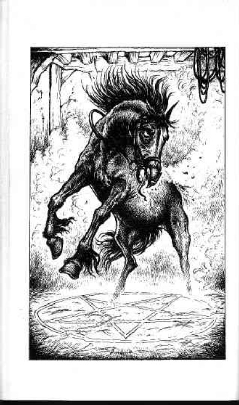
As you cross the portal, you observe a pentagram on the floor - too late! A smoky shape materializes within it, and a spectral steed with fierce glowing eyes, its breath fire and choking smoke, bounds forth to attack you. You have no time to run- you must fight the Count's terrible Demon Steed. You must subtract 2 points from your SKILL for the duration of this combat only, due to the choking effects of the Steed's fiery breath DEMON STEED SKILL 8 STAMINA 10 If you win, you find nothing of interest here. So, will you Head for the Crypt? Turn to 90 Open the north, brass doors? Turn to 2 Open the south-facing door? Turn to 18
During each Attack Round until you kill the Vam- pire Mist, you will lose 1 STAMINA point from the blood drain. Turn to 42 and continue the fight!
A shaft of moonlight strikes you and you see with horror that your hands are becoming covered with fur! You feel your teeth growing, and you almost start baying at the moon! This transformation is very painful - lose 3 STAMINA points. Change your Lycanthropy to the Major Lycanthropy Affliction on your Adventure Sheet. You search the tower for anything which might help you; turn to 51
You insert the key into the lock and push the door open. Inside, there is a row of simple tombs with no markings or decorations, all identical. You have a strange sensation; your nerves are tingling, and a bead of sweat drips from your brow into one eye making it sting. You rub your eyes to clear your vision, and when you look again you can see a pale ghostly figure drifting towards you, gesturing to you to come forward. The apparition - seemingly a woman - is young, gaunt of face, and looking very determined! You can either flee (turn to 59) or walk towards her (turn to 102
The little creature asks you if you have come to see his master. You nod in mute agreement. 'Well don't just stand there, go on in! He's not too busy - I'm sure the potions will soon be ready!' You realize that this is an alchemist's laboratory, and that the small winged creature is a magical creature - a Qi homunculus. It gestures you to a door to the south which you open, turn to 118
Trembling after the fight, you gaze at the coffin. Mastering your fear, you open it. It is bare, save for a fine dusting of black, dry earth on the bottom. You flip the coffin over, flinging earth over the floor, and smash the wood with the pommel of your sword. In the Notes box on your Adventure Sheet record that you have destroyed one of Reiner Heydrich's coffins! Gain 1 FAITH point. You leave this chamber; you can try opening the door at the west end of the corridor (turn to 34) or follow the corridor round to the south, past this door (turn to 31).
Having overcome these Undead servants, will you Head into the main kitchen to the east? Turn to 282 Leave and go to the north door in the corridor? Turn to 332 Leave and open the west door in the corridor? Turn to 221 Leave and follow the eastern side-passage off the corridor? Turn to 353
You feel a surge of well-being from the blessed item and your STAMINA is returned to its full Initial level! Turn to 35.
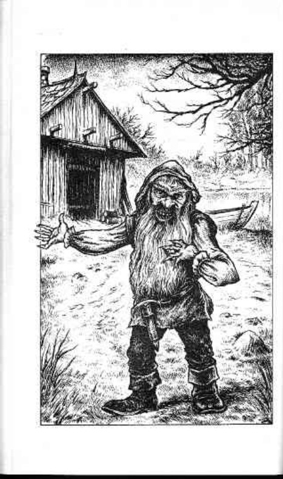
As you approach, a small wizened Gnome scuttles out of his hut into the grey light of dawn and sidles up to you, grinning rather maliciously. He demands 2 Gold Pieces for ferrying you across in his boat, but he adds that you can stay and sleep in his hut if you wish - and you are very tired! If Valderesse the Ranger is with you, turn to 64. If she isn't, will you 1 Attack the Gnome? Turn to 113 Accept his offer of a place to sleep and rest? Turn to 211 Pay him and cross the river? Turn to 162
Do you already have a Magic Sword? If you do, turn to 82. If you don't, turn to 61 oy P Ad =a tae GAME. ae - a
Gunthar gives you some food and wine (recover 4 lost STAMINA points) and tells you of his work as a healer. He is well aware of his brother's evil and denounces Reiner as a cruel, vile creature. But Gunthar claims to be no fighter, and in any event he could not bring himself to kill his own brother! Gunthar seems weighed down by the evil of the Castle, almost in a state of despair. You take a chance and announce that you are here to do away with Reiner Heydrich. Gunthar's eyes light up with hope, and he says he will give you the one thing he has which could help. From a carefully concealed pocket inside his robes he pulls out a silver crucifix on a chain, adding that, to destroy Reiner, this will be needed. Add the Crucifix to your Possessions You will also need a stake to drive through Reiner's heart as he sleeps in his coffin, but Gunthar does not have one; you'll have to find this elsewhere. 'Un- less, of course, you find Siegfried's sword Night- star, for that also would destroy him, but it has been lost for many years,' he sighs. Now, will you Leave and open the west door on the landing? Turn to 294 Ask Gunthar for help with an Affliction, if you have one? Turn to 48 Show Gunthar a book, if you have one? Turn to 317
The girl kisses you back. Unfortunately, this in- volves sinking her teeth firmly into your throat! Lose 2 STAMINA points. You now have to fight the girl; roll one die. This is the number of Attack Rounds your throat will go on bleeding, and you willlose 1 STAMINA point on each Round while the bleeding lasts. Turn to 150 to fight
The only item of use in the present situation is a Silver Mirror. If you do not possess a Silver Mirror turn to 26. If you do have a Silver Mirror, Reiner recoils from it. This gives you time to throw Holy Water if you can and if you wish to do this (turn to 216), or to cast a spell (turn to 158); after you have done this, you still have a little extra time, as the Vampire hesitates before the Silver Mirror. You will be able to get a free sword strike at him, causing 2 points of damage to his STAMINA, when you begin aswordfight, so make a note of this! If you are going to attack him with a sword immediately, turn to 26 now al Oy "Oy So es CT aig
You open the door. It is very dark within, and you need your lantern to see by. Peering in, you can make out sacks of grain and some scurrying rats. There is a door in the west wall of this storeroom. Will you Move to the west door in the storeroom? Turn to 67 Leave and approach the Crypt, if you haven't done so before? Turn to 90 Leave and approach the north doors in the courtyard? Turn to 2
The gas-cloud seeps slowly behind a wall-hanging and you reveal a secret door there. Opening it, you uncover the last of Reiner Heydrich's coffins: throwing back its lid, you find the slowly re-forming body of the Vampire. Do you have either a Crucifix or the Shield of FAITH, and also either a Stake or the magical sword, Nightstar? If you have at least one of each pair of items, you know what to do, so turn to 42. If you don't have at least one of each pair, turn to 69
You already know Katarina's wiles; she tried to control you before, but you resisted her the first time - and you are immune to any further tricks! You strike out with your sword, inflicting 2 points of damage upon her stamina. Turn to 106 to finish the fight
After overcoming Wilhelm, you look at the incredible clutter all round these rooms. Will you: Search these rooms carefully? Turn to 78 Leave, and open the east door opposite in the corridor, if you haven't done so before? Turn to 118 Leave and open the door at the south end of the corridor? Turn to 252 Return to the entrance hall and open the north door there? Turn to 101
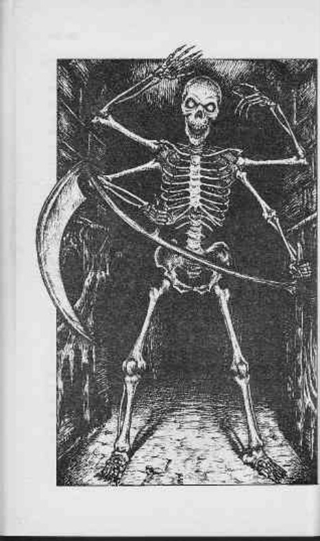
The Major Thassaloss is the most powerful of all the Count's guardians. When you fight it, in each Attack Round you must roll one die in addition to normal combat dice-rolls. If the roll is 1-5, a green tay of intense cold from the eye-sockets of the monster freezes you and you lose 1 STAMINA point Only if you roll 6 will you be able to evade this ray This happens, no matter who has the higher Attack Strength in the Attack Round, so the Thassaloss is a formidable enemy! MAJOR THASSALOSS sxKILE 10 STAMINA 15 If at any time you wish to cast a Shatter spell (and can do so), turn to 109. If, at any time, you wish to cast a Jandor's Bolt spell (and can do so), turn to 125 If you win, turn to 224
Holy Water does no damage to Katarina, since she is not in fact a Vampire! She ducks under the thrown vial and has no time to strike back. Fight with your sword, if you are using Nightstar, you can claim a bonus of only 1 to your SKILL for this sword. Return to 106
ee eS po 24 Your hands manage to grab on toa bush at the edge of the rocky precipice, and this saves you from certain death on the jagged rocks below. You haul yourself up and, somewhat shaken, follow the road towards the Castle. You have a long walk ahead of you, so roll one die, If the number rolled is 1 or 2 turn to 362. If you roll any other number, turn to 73
You search Lothar's rooms, and after some time you find a hidden wall-alcove from which you retrieve a Silvered Stake and the Castellan's Keys; add these to your Possessions. Now, if you have met Katarina Heydrich and you want to take the Book of Swords to her, turn to 41. Otherwise, you leave and make for the door at the south end of the corridor; turn to 319
Do you have a Magic Sword? If you have, turn to 372. If you haven't, turn to 284 ts a ji nn --e-----eEOEeEeEeEEEEeeEeEEeEeEEEEeEeEeeeeeEeEeEEeEEeEEEE
As you step carefully across the threshold, you trip over a very thin, cunningly concealed tripwire, and the alarm this sets off alerts the man. He wakes and not unmeasonably, slashes at you with his wickedly sharp knife; lose 2staMins points, Now you can either attack him (turn to 77) or try to talk with him - afterall, you haven' tactually attacked him yet, so he just might listen (torn to 126
Before you can finish it off, the hateful undead thing transforms itself into a gas cloud and floats away! If you have a Forcewall spell and wish to cast it, turn to 111. If you cannot - or do not wish to - cast the spell, turn to 63
Which spell do you want to use? Will it be Forcewall? Turn to 155 Greatstrike? Turn to 112 Jandor's Bolt? Turn to 395 if you have none of these spells, turn to 164 ae ye ie
The monstrously large Ghoul backs away from you, spittle drooling over its blackened stumps of teeth. You can ascend the stone stairs opposite the door (turn to 159) or attack the retreating Ghoul (turn to 107).
The corridor turns south, and there are four doors before you: two to the east, one to the west and one at the end of the corridor, facing you. Will you Open the first door to the east nearest you? Turn to 58 Open the second easterly door? Turn to 227 Open the door at the south end of the corridor? Turn to 319 Open the door to the west? Turn to 114 C-O
With the symbol of the cross on the Crucifix or the Shield of FAITH held over the body, you drive the point of the Stake or Nightstar through the evil heart of Count Reiner Heydrich. Spots of black blood splash on the white silk lining of the coffin and on your hands, but you don't relax your grip. An unholy shriek comes from his mouth and the clawed hands of the expiring Vampire grip the coffin rim, then slowly go limp. The body gradually crumbles to dusi. At last the Count has been sent to join his vampiric ancestors in the hells. Gain 2 FAITH points and 2 Luck points! Turn to 132
As you enter the bell tower, a flock of bats rises up and starts swarming in the air in front of your face. You must Test your Luck. If you are Lucky, turn to 86. If you are Unlucky, turn to 133.
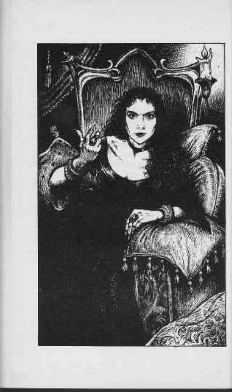
You enter a lavishly decorated suite of rooms, with plush-covered furniture, exotic carpets and rugs tapestries and paintings, and sackfuls of gold plates, gem-studded goblets, decanters, omaments this place is dripping with wealth! There is also a person here. Lazily reclining in a throne-like teak armchair among leather cushions is a stunningly beautiful young wornan; her flowing black curls tumble over her shoulders and frame her slender very pale face. An emerald bracelet circles her wrist as she lifts an arm from the folds of her black dress and gestures to you to come forward. 'It is polite to knock first, but you may come in,' murmurs Katar- ina Heydrich in a husky, seductive voice. Will you attack her (turn to 71) or talk with her (turn to 363)? st Ale ant ae in tpt sil ie f 1 LF i t+ wif ul i Mes ohid i -- Oe ----
"You possess all that is needed to destroy Reiner in his coffin,' says the ghost softly, 'but can you fight him?' Do you have-the Book of Swords? If you do turn to that paragraph which is half the number of the magical page in that book (for example, if the magical page were 320, you would turn to para- graph 160). If you don't have this book, turn to 14
You can try haggling with Karl-Heinz if you wish but you will have to Test your Luck to do this. If you are Lucky, turn to 134. If you are Unlucky, or if you don't want to risk offending Karl-Heinz by hag- gling, but simply plead poverty and offer a lower fee, turn to 183
Trying to stop the noise by fiddling with the keyboard gets you nowhere, and you lose 1 STAMINA point from some rat-bites while you try! Now, will you try to Find the bellows which power the organ? Turn to 65 Silence the organ with some nearby object? Turn to 149 Make a dash for the north door? Turn to 335
The index finger of the hand is raised, painfully slowly, and it gestures towards the south. Out of the corner of your eye you see a bottled human head opening and closing its eyes, apparently trying to speak, but it can say nothing. Again the finger gestures to the south, and for an instant you think you can hear a whispering voice say, 'Help.' Then the arm falls back lifelessly from you, and the head does not move. This is unnerving; you must lose 1 FAITH point, and you abandon your search straight away. Will you now open the south door at the T-junction (turn to 8) or the east door (turn to 371)?
The wolves stop to eat the food; deduct 2 meals from your Provisions. You close the door behind you Now, will you Head for the Crypt? Turn to 90 Open the northerly brass doors? Turn to 2 Open the door to the south? Turn to 18
The dog is a savage mastiff, with wiry grey fur and large yellow teeth, which barks ferociously and slavers at the prospect of having you for a meal! If you chose to attack the dog rather than trying to sneak past it, you get a free strike at it, and you can subtract 2 points from the STAMINA score for the dog before you fight it MASTIFF SKILL 7 STAMINA 7 If you win, you take 4 Gold Pieces from the table add these to your Treasure) and some food from the well-stocked larder (add 4 to your Provisions Now, you can either get into the boat (turn to 138) or wade across the river (turn to 187 a nit
You return to Katarina. She purrs happily at the news of the Castellan's death. She takes the Book of Swords and castsaspelloverit. Azuremagical flames lick at the tome, but it does not burn. Instead, a strange humming sound rises from it. Then the book is gone, and in its place - nothing! Katarina looks horrified. 'Damn Reiner! He has foiled my countermagic!' she curses, and her face is convulsed with rage. Suddenly, you are very fearful of what she might do to you in her anger, so you mn out and head for the door at the south end of the corridor turn to 319
Because the mist is all round you, it is easy to hit you may add 1 to your SKILL when fighting the Vampire Mist VAMPIRE MIST SKILL 7 STAMINA 9 If you are hit twice, turn at once to 165. If you win, turn to 10
You insert the great iron key into the massive lock and the heavily barred gate swings open. It is pitch- black below and you must have a light source: your lantern or a Magic Sword, if you have one. You descend stone steps, covered in dust, cut between walls which are cobwebbed and moss-covered. The walls have pale decorations and, at intervals, leer- ing gargoyle faces which seem to be looking at you- or is that just your imagination? Rats scurry aboutin the distance; as you step down into a tunnel at the end of the steps, you notice a small pile of bones at which they have been gnawing. They look not unlike human bones. With a shudder, you walk on until you reach a door, and you open this with your keys. Before you is a corridor in which you can see doors and alcoves in the distance. Now you must Test your Luck. If you are Lucky, turn to 147; but if you are Unlucky, turn to 91 tl -------- - ee a
The Wraith shrinks back from you, its wispy clawed arms scrabbling at the air close by your face, but your FAITH protects you! Now you see a wooden spiral staircase leading upwards in this bare and dusty chamber. You could easily escape the Wraith that way; however, since it is an evil thing, you would prefer to destroy it. You have heard, though, that only a magical weapon can harm a Wraith, so if you don't have one it could be dangerous to attack it! Will you: Attack the evil Wraith? Turn to 83 Ascend the staircase up the Tower? Turn to 316 Return to the entrance hall and open the north door there? Turn to 101
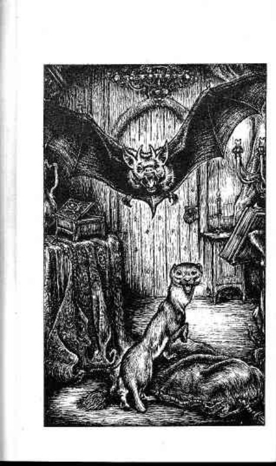
You push open the door into Count Reiner Heyd- ich' living-room. Rich walnut wall-panelling and oak furniture tell you that he is a creature of taste, at least. But you have no time to dwell on details, for two of his pets are racing to attack - a vicious Vampire Weasel and an evil-looking, leathery- winged Horned Vampire Bat! Fight the bat normally. Every Attack Round when you are fighting the bat, you mustalso roll one die in addition to normal combat dice. If the result of this die-rollis 5 or 6, the hateful little weasel has sunk its fangs into your leg; lose 2 STAMINA points because of this bite. Worse still, the weasel sucks your blood for every subsequent Attack Round, the blood- drain causes you to lose 1 STAMINA point. Once you kill the bat, the weasel runs away; but if it has bitten you, you lose a further 3 STAMINA points before the bleeding stops HORNED VAMPIRE BAT SKILL 8 STAMINA 7 If the bat bites you twice, turn at once to 85. If you win, turn to 135
You are almost taken by surprise by a ghostly hu- man form which glides silently into the room and across it to attack you! The malicious, life-hating Spectre is the most powerful of the Count's undead servants, and you have to fight it! Do you have a Magic Sword? If you have, turn to 298. If you haven't, turn to 208 Tig a ieee '
After careful searching, you find a secret door in the passage on the north wall, some ten feet from the door at the end of the passage. You open it and enter a bare chamber with a half-open door in the east wall. Standing guard here are two Zombies bearing pole-arms - your FAITH will not protect you against these mindless but thoroughly trained guards! Fight the Zombies one at a time in the doorway SKILL STAMINA First ZOMBIE 6 6 Second ZOMBIE 7 6 If you win, turn to 348 OO big jas wy Jae ES
Gunthar looks nervous. He says that any magic he might use to help you would alert Katarina, which could be very dangerous... he is clearly reluctant. Do you have the Book of Healers? If you do, turn to 375. If you don't, you can either leave here and open the west door on the landing (turn to 294) or you can show Gunthar any other book you have found in the Castle by turning to the paragraph with the same number as the magical page in that book
Unfortunately your gaze dwells too long on the portrait of the Count, and its eyes burn into you holding you fascinated. Do you have the Lycan- thropy Affliction? If you do, turn to 95. If you don't, turn to 144.
You skirt carefully round the building. You have approached from the south, and can make out some features of what seems to be a two-storey building In the south-west and south-east corners are the towers, whose spires loom above the slate roofs over the stone walls. Bats flit into and out of the south-west tower belfry. The arrow-slits in the tow- ers are too high and too narrow to climb in through You can see lights on the ground floor from win- dows in the west and east sides, but heavy drapes prevent you from seeing anything within the Castle itself. Roll one die and add 3. If the total is less than or equal to your FAITH turn to 99; if it is greater than your FAITH, you continue walking around and arrive back at the main gates without finding any other likely means of getting into the place, so turn to 326
Checking carefully, you find a small secret door in one wall; it conceals a wall alcove, from which you draw outa white shield with a red cross. This is the Shield of FAITH; gain 1 FAITH pointand 1 LUCK point for finding it, and add it to your Possessions. Now you must leave the tower, go to the entrance hall and open the north door there, so turn to 101 - =a 'a eae aia ooo
You are in desperate trouble, fighting against one of the Count's more powerful magic creations, a Minor Thassaloss. You must subtract 2 points from your SKILL when fighting this battle, since you are still partially blinded by the effects of the magical flash of light In each Attack Round, roll one die in addition to the normal two combat dice. If the result of the roll is 1-3, the Minor Thassaloss will strike you with a numbing green ray of cold from its glowing eye- die-roll is 4-6, you will have time to dodge this ray sockets, and you will lose 1 STAMINA point. If the The Thassaloss can freeze you even when it has the lower Attack Strength in an Attack Round, so it is a dangerous enemy! MINOR THASSALOSS sxi_L_8 STAMINA 11 If you win, you can search this chamber (turn to 352 or leave, hoping for less formidable opposition else- where (turn to 320
The white wine is magnificent Mauristatian Chardonnay: crisp, cool and with the slightest hint of p?tillance! You are quite refreshed, and regain 4 lost STAMINA points. Unfortunately, you drank a little too much, and you must subtract 1 from your SKILL when you fight your next battle (this affects only one combat, your very next one). Now you can try munching the appetizing-looking biscuits (turn to 4) or make for the west door (turn to 45).
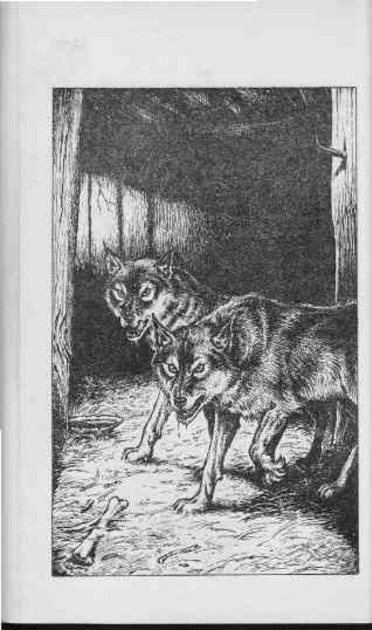
You open the doors into a wolf pen, and two large wolves glower at you and lick their lips! Will you Attack the wolves? Turn to 103 Shut the door and get away? Turn to 152 Search for something to use against the wolves (other than your sword)? Turn to 299
In this room there is only a large oaken chest on top of a table. It is securely locked and bound, but with the Castellan's Keys you manage to unlock it However, the lid stil! won't open! You see a silvered plaque on the chest with some kind of code etched on it, so you investigate this to see if you can find a way of raising the lid of the chest. Turn to 123
You feel a warm glow from the globe as you hold it regain 3 lost STAMINA points. But, oddly, Siegfried seems disappointed in you. Turn to 35 a =a REZ a
As you kill the little homunculus, there is an expio- sion from one of the large glass vessels and you get splashed by boiling acid: lose 5 STAMINA points There is aloud rumbling in the laboratory, and some equipment begins to rattle ominously. If you are still alive, you have to get out by the way you came in and you run to the very end of the corridor to get away. There is a door on your left-hand side there which you open: turn to 252
You open the door into a small linen store and see a large and possibly poisonous spider lurking among the starched cloth! You shut the door quickly. Back in the corridor, will you Open the second doorto the east? Turn to 227 Open the door at the south end of the corridor? Turn to 319 Open the door to the west? Turn to 114
You slam the door behind you. As you look northwards, you see a slimy trail of greenish yellow muck seething from under the door to the north! You open the eastern door quickly and slip through; turn to 371.
You open the door into a dusty, cobwebbed storage chamber that is full of lumber. If you search here you could possibly be surprised by someone enter- ing the main hall, so will you Search this storage room? Turn to 110 Leave here and open the north door? Turn to 101 Leave here and follow the east passage? Turn to 256
Siegfried says that while a stake can kill Reiner if it is driven through his heart, your present weapon cannot affect him in combat; you must have a Magic Sword. There is such a weapon, admittedly no- where near as powerful as Siegfried's own, in the tomb of Adolf, a Castellan of the Castle in the distant past. This tomb is to the east of the T- junction, so you leave here and head for it: turn to 108
Suddenly the girl stands upright, arms out- stretched, with her head thrown back. She screams! Roll one die and added 4. If the total is less than or equal to your FAITH, turn to 150. If it is greater than your FAITH, turn to 195
The Count floats away behind some wall-hangings - you search but can find no doorway behind them! You know that vampires can regenerate, and you know too that you didn't kill him off. You guess that he may be back before long! You have time to perform four - and only four - actions. Decide what these will be. You could eat a meal (this takes two actions, and you can wolf down only one meal in time), drink a Potion of Healing or restorative brandy (one action per drink), release the girl with your keys (two actions), cast a spell such as Trueheal or Luckspell (one action per spell cast), or get some object from your backpack (one action per item you want to retrieve). When you have decided what to do, turn to 178
OO eo 64 Valderesse lifts up the Gnome by his jerkin and holds him up to speak to him face to face. "Get my friend across the river, Snivel, free of charge. You owe me a favour for keeping those wolves away from you last week!' Turning to you, she murmurs that Snivel is not the kind of Gnome whose offer of hospitality you should accept. There is a forester's hut further along the trail and you will be able to find rest there in safety. She puts the Gnome down and he fawns and toadies to you. You clamber into his boat and he mutters some words which you don't make out. The boat moves straight out against the current, into the middle of the river! Valderesse waves goodbye to you as you step out safely on the opposite bank. Turn to 383
Spending time searching for the air bellows in a large and unfamiliar pipe organ while being harassed by malicious, biting rats is not exactly an easy business. Lose 3 STAMINA points from the bites before you have the sense to give up and make a dash for the north door; turn to 335
The woman who stands before you is tall and slim with flowing black hair and mysterious, emerald-green eyes. She is stunningly lovely, but very pale; the ivory pigment of her skin is emphasized by the jet-black dress she wears. Cold silver and glinting emerald jewellery adorn her. This is Katarina Heydrich, the Count's sister, who is gazing deep into your eyes! Turn to 264.
You are just getting close to the door when the rats start to squeak, then they rush forward to attack you! There are too many for you to fight. You can either open the west door and go through (turn to 115) or retreat back into the courtyard (turn to 163).
Katarina smiles seductively at you; you are charmed, and you know that you must do exactly what she wants. You agree to slay the Castellan and you follow her directions: leave, go south, and take the second door to the east. Turn to 227
You have overcome the Vampire, but you have no power to destroy him in the end. As you watch, you think you can see a grin slowly forming across his face, and a tiny trickle of blood runs slowly towards his chin as his fangs are revealed by the slowly parting, deathly pale lips. You free Nastassia, if you haven't already done so, and together run for your lives. Although there are stumbles and falls, finally you get back to Leverhelven. The folk are glad to see Nastassia once again; when they hear that the Count still lives, however, they fall silent and shake their heads in despair. Your adventure may be over, but your quest was not completed; you have failed.
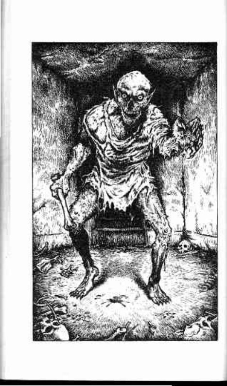
The Ghoul springs at you with filth-encrusted and bloodied talons, its rank breath hot on your face. Its eyes are miniature infernos of fi-ry hatred and hunger for living flesh! HUGE GHOUL SKILL 8 STAMINA 11 If the Ghoul hits you three times, turn at once to 127 If you win, turn to 159
Do you have a Magic Sword? If you do, turn to 199 If you don't, turn to 143
Count Heydrich sinks his fangs into your throat and sucks greedily at your warm, strong blood. You lose consciousness for now, but you will soon rise from the dead as his mindless servant!
As you walk through the night, using your lantern to light your way, you can hear wolves howling on this dank and foggy night. Bright moonlight occa- sionally breaks through the swirling mist and thick cloud to show you some detail of what is away from ! the path and outside the little circle of warm light your lantern casts. As the howling gets closer, one such shaft of moonlight reveals two wolves straight ahead. They are large specimens, with silvered grey fur and yellow eyes and slavering muzzles - and they are bounding towards you! Will you Attack the wolves? Turn to 121 Throw some food to them? Turn to 218 Try to run away and escape? Turn to 170
'To destroy Reiner, you need a Crucifix as well as a Stake,' Siegfried says. 'Pick up that globe and fix in your mind's eye the image of a silver cross.' You do this, closing your eyes to help you concentrate when you open them, the ball has gone, but in your hands is lying a small silver crucifix! Add the Crucifix to your Possessions. Turn to 104
You are wondering what to say, but the Sage talks freely of his own accord. Mostly he goes on about how mean the Count is, and how he - the Sage - needs more money for books. You realize that you're going to have to pay for information, and it isn't going to come cheap. While you're wondering how much to offer, and how to do this politely, the Sage suddenly announces, 'Of course, for a goodly sum in gold I could get you into the library. Who knows what you might not find in there?' You can ask the Sage about various matters, but you'll have to pay him for each answer you get. He will accept Gold Pieces, or any Treasure items of equal value. You can choose what you want to ask about from the list below, but you must pay for each answer you get. The Sage demands payment in 75 advance, and he doesn't haggle! For each question you will be referred to the paragraph with his answer, then referred back to this paragraph. You could ask about Getting into the library 6 Gold Pieces) Turn to 146 Where the Count can be found 3 Gold Pieces) Turn to 254 Relatives of the Count in the Castle (3 Gold Pieces) Turn to 209 Nastassia, the missing village girl (2 Gold Pieces) Turn to 185 What's in the Crypt 2 Gold Pieces) Turn to 303 Any Afflictions you have 2 Gold Pieces) Turn to 394 After you have finished paying for information (and reduced the amount of your Treasure accordingly you leave the Sage to his musty old books and manuscripts. If the Sage has given you an item, you follow his directions: turn to 332. Otherwise, you leave and return to the passage outside: turn to 47
The Count is unusually resistant to this magic. Roll one die. Ona roll of 5 or 6, he manages to evade the full forces of the Bolt and takes only 3 points of damage. If you roll any other number, he suffers the full 6 points of damage. Now you must fight with him. You can use the Greatstrike spell if you have it and wish to use it (turn to 346); otherwise, turn to 26. Remember to note how many points of STAMINA the Count has already lost
You very quickly realize that the man is strong, agile and wily. You face a very dangerous opponent! FORESTER SKILL 10 STAMINA 7 If you survive, and if you didn't sleep at the Gnome's hut, you must sleep here; you will not be disturbed, and you regain 4 lost STAMINA points for this rest. You may search the cottage if you wish: turn to 177. When it is time to continue your journey, turn to 228.
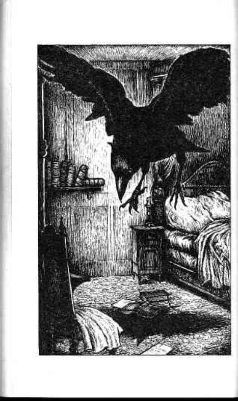
During your search you find a total of 4 Gold Pieces add these to your Treasure), but you also find the young man's pet, a huge, brooding Raven, which perches on a mantel in Wilhelm's bedchamber and swoops to attack you! GIANT RAVEN SKILL 7 STAMINA 6 if the Raven wounds you, turn to 360. If you win vou decide to leave and try the door at the end of the corridor leading south: turn to 252
Karl-Heinz the Alchemist leaves you and enters his laboratory through the north door of this room; half an hour later, he comes back with a bubbling green liquid in a conical glass vessel. On his shoulder a small, winged, green homunculus perches; it grins nastily at you as you hand over your 8 Gold Pieces deduct these from your Treasure) and drink the filthy stuff. It tastes absolutely vile, and you feel very weak and sick after drinking it. Lose 4 STAMINA points. But it does work, and you are cured of your (Major) Lycanthropy Affliction (ad- Just your Adventure Sheet accordingly}. With a sense of relief you thank the Alchemist and leave by the door in the west wall of his room. Turn to 373
You sense that Katarina has made some attempt to control you by magic, but she has failed. Snarling with frustration and rage, she commands you to leave. She begins to weave a spell, but you are fast enough to get away! Turn to 32.
Fight the Zombies one at a time, in order. You are outnumbered, but a brave warrior should have no fear of these slow, mindless creatures! SKILL STAMINA First ZOMBIE 6 5 Second ZOMBIE 7 5 Third ZOMBIE 6 6 If you win, turn to 11.
You ascend back into the coffin and leave the Undertomb; the ghost fades as you depart. You climb the stairs back to the T-junction, and from here you can go down the east stairs (turn to 108) or the southern stairs (turn to 161).
Do you have a Magic Sword? If you do, turn to 129. If you do not, turn to 231.
Lothar was a good and decent man, and you have slain him needlessly. Lose 2 points from your FAITH and 1 point from your LUCK. Turn to 25.
If you have the Curse of the Healer, turn to 186. If you don't have this Affliction, turn to 206
You swing your lantern around and drive the bats off. They fly squeaking out into the enveloping blackness of the night. You see before you in the dirty bell tower some old bronze bells and one silver bell, which seems to glow with a very faint blue light, Roll one die and add 3. If the total is less than or equal to your FAITH, turn to 179. If the total is greater than your FAITH, turn to 233
You push past the unlocked door, and find yourself standing on a stone balcony overlooking the courtyard. This balcony stretches to east and west of you, and also continues round towards the south at its eastern edge. There are three other doors leading away from the balcony. One door is to your right and clearly leads into a chamber next to the south-western tower; if you want to open this door, turn to 128. A second door is halfway along the southern spur, on the east side; if you want to open this door, turn to 302. The final door is at the extreme south of the balcony, furthest away from you; if you want to open this door, turn to 244.
This is a foolish decision! The monster was already close by the door, and you have no time to flee in this way. The Stench Ghoul hits you: lose 2 STAMINA points. Turn to 122.
Roll two dice. If the total is less than or equal to your SKILL, you tiptoe past the dog and scoop up the food and the gold. If the total is greater than your SKILL, you wake the dog and you will have to fight it. Turn to 40, but if you did not waken the dog you do not have to fight it, and you can simply take the food and treasure listed in paragraph 40.
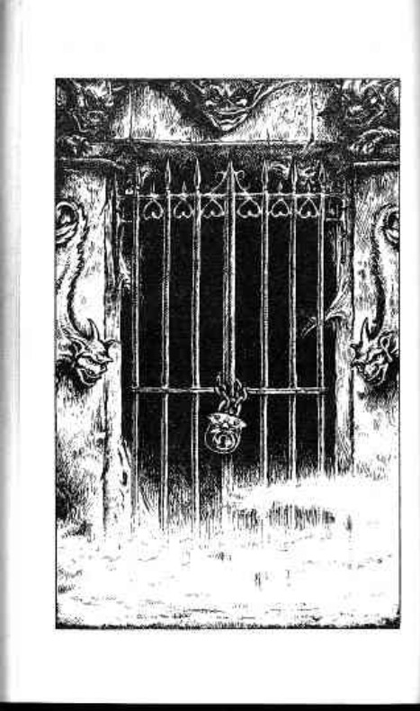
The Crypt has a stone entrance with steps leading down. Hideous gargoyle heads with fiendish grins stare balefully down at you, and the heavy iron-railing gates are firmly locked. Behind you, you hear snarls somewhere behind the doors to the west, and decide not to investigate these. But will you: Try to force the gates to the Crypt? Turn to 141 Open the southern door in the courtyard, if you have not already done so? Turn to 18 Head for the brass doors to the north? Turn to 2
Stepping forward, your weight triggers a concealed pit trap. You fall heavily to a stone floor, ten feet below. Lose 4 STAMINA points. Also, if you are carrying any brandy or Holy Water, their containers have smashed and you must cross these off your Possessions. You manage to clamber out of the pit: a simple trap, but effective, in your case at least. Turn to 157.
Gunthar carries no weapon and you can slay him easily; however, as you do, he lays a hand on your neck and whispers a curse on you. You feel a stabbing pain - lose 3 STAMINA points - and, when you check, you can feel a blood-wet and painfully sore patch of skin there. You now have the Curse of the Healer, so record this in your Afflictions box. Searching the rooms, you turn up 3 Gold Pieces (add this to your Treasure), but nothing else of value. You return to the landing, opening the west door there: turn to 294.
Which spell will you cast? Will it be: Forcewall? Turn to 194 Jandor's Bolt? Turn to 125 Shatter? Turn to 109
'You have the Book,' the apparition says approvingly. 'My sword is imprisoned within it, Reiner's magic used blood to put it there, and blood is needed to free it again.' Siegfried points to an ornate silver chalice on the table. 'You must give up blood to release Nightstar. It will cost you STAMINA, but the weapon is a peerless one.' If you are ready to do this, turn to 328. If you don't want to take the reduction to your STAMINA, or if you're simply unwilling to agree, you can ask Siegfried if there is any other way of getting a weapon that will destroy the Vampire: turn to 374 - unless you already have a Stake, in which case turn to 14.
Hair begins to sprout on the backs of your hands and your canine teeth seem to grow and force themselves over your bottom lip! Lose 1 point from your FAITH and 1 point from your LUCK; you know now that if you don't get help soon you are in very serious trouble! Change Lycanthropy to Major Lycanthropy in the Afflictions box on your Adventure Sheet. You flee, and you can open the door at the east end of the corridor (turn to 351) or run south along the corridor (turn to 166).
You sever the arm at the elbow and the hand releases its grip; what looks like fresh blood splatters over the floor. You are shocked to hear the sound of weeping coming from one of the human heads, sealed in a bell jar; lose 1 FAITH point and 1 LUCK point. You flee this place; back at the junction, you can open the east door (turn to 371) or the south door (turn to 8).
Mocking laughter rings down the passage from the west. You see a tall, dark-haired man in a crimson- black cloak, unmistakable by his widow's peak hair- line and bis glowing red eyes. The Count! "You are no threat to me, you snivelling weakling,' he mocks He wraps his cloak round him and is transformed into a giant bat. He flies off at great speed, and you cannot keep up with him. Turn to 47
The hairs on the nape of your neck rise as you sense that something intensely evil is in the room! Spin- ning around, you see a green, ghostly, human shape beginning to take form in the doorway. You cannot run, combat is inevitable - but you do have time to perform one action of some kind before you are forced to fight. You have time to wolf down some food, or a potion, to regain lost STAMINA, if you are able; or you could take a swing at the Spectre with your sword. If you wish to strike at the Undead thing, turn to 3. If you want to perform some other action, decide what that will be, then turn to 117
Although there is a quality of indescribable evil about the Castle, you can also sense some powerful good in the place. From the centre of the north wall there is something - is it magic, perhaps? Since you can't get into this part of the Castle directly, you'll have to enter the main gates to find out. Turn to 326 J SS OOOO ee
You feel horribly weak as the tentacles of the Vam- pire Mist unerringly pierce the bloodied patch of skin on your neck. Lose 2 STAMINA points from the pain, and you will lose 2 more STAMINA points in every Attack Round because of bleeding, irrespec- tive of whether you or the Mist has the higher Attack Strength, until you destroy the Mist! Turn to 42 and finish the fight
You push open the north door in the entrance hall and see a brightly lit corridor stretching out before you. The floor is tiled, and there are small water-colour paintings hung on the walls. Before you there is a door on the east wall, and further along one on the west wall; between the two, there is a side-passage to the east. There is also a door facing you at the north end of the corridor. Will you: Open the north door? Turn to 332 Open the east door? Turn to 172 Open the west door? Turn to 221 Go down the eastern side-passage? Turn to 353
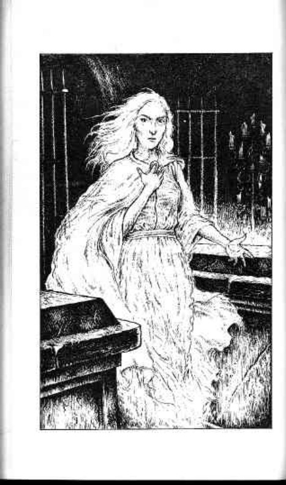
The ghostly girl communicates with you by tele- pathy. I am Jandor, one of Katarina's victims, she tells you. f was caught off guard and my magic could not help me before I was bled to death. You shiver, contemplat- ing such a terrible end. There's no time for that. My tomb-she gestures - my magical ring of spell-storing is in it. It will help you in your quest. All those buried here have been consumed by the Heydrichs over the years Bring us our revenge. You nod grimly to her; you seek 70 thing more! The youthful wizard's ghost watches as you open her tomb and take the plain gold ring from her skeletal hand. The ring originally had six spells stored in it, but now only three remain. Each spell is usable only once. Roll one die three times to get three different numbers between 1 and 6, then consult the list below to see which spells the ring has within it for you. (Re-roll any duplicated numbers For each spell, turn to the paragraph which de- scribes that spell; you will then be referred back to this paragraph Die roll of 1, spell is FORCEWALL Turn to 232 Die roll of 2, spell is GREATSTRIKE Turn to 160 Die roll of 3, spell is JANDOR'S BOLT Turn to 273 Die roll of 4, spell is LUCKSPELL Turn to 323 Die roll of 5, spell is SHATTER Turn to 222 Die roll of 6, spell is TRUEHEAL Turn to 120 When you have determined the three spells in the ring, record them in the Spells box on your Adven- ture Sheet. You leave with the ghost's blessing; turn to 59
Fight the two wolves one at a time in the doorway SKILL STAMINA First WOLF 6 5 Second WOLF 7 6 If you win, you search around but find nothing valuable. Now will you Head for the Crypt? Turn to 90 Open the southern doors in the courtyard? Turn to 18 Open the brass doors to the north? Turn to 2 SS ee -- Aa a 4g a DS, ey atige PSB Lie jini pang Met athe. Lures taal ites fide
'You already possess what is needed to destroy Reiner in his coffin,' Siegfried whispers softly. 'He rests to the south of here; you know where to find him. But we have more work here. Pick up that globe and concentrate upon it. If you are of suf- ficient FAITH, it will serve you well.' Roll one die and add 4. Ef the total is less than or equal to your FAITH turn to 12. If the total is greater than your FAITH turn to 56
You gain a free attack on the first, cowering Zombie - and, by a stroke of good fortune, you kill it instantly! Gain 1 LUCK point. Turn to 81, and fight the second and third Zombies only i
Katarina holds a needle-sharp dagger in her left hand - and she is exceptionally skilled in its use! If you have had the chance to strike at her already, you may subtract 2 from her STAMINA Score given be- low KATARINA HEYDRICH SKILL 10 STAMINA 10 You can fight her in one of many different ways Will you make a first attack Using your sword? Turn to 164 Using a spell? Turn to 29 By throwing Holy Water at her? Turn to 23 Using a Silver Mirror, hoping to make her recoil? Turn to 145 After making your choice, you will be referred back to this paragraph. If eventually your sTaMINa is reduced to 5 or less, turn at once to 237. If you win turn to 400
You get a free hit at the Ghoul as it cowers away from you, but after you hit, it fights back! Turn to 70 to fight, and you may subtract 2 from the STAMINA total given there for this monster Bay 16) =a a a aM i" - * iy ae
You descend the stairs eastwards until you are standing before a black door with a silver plaque which reads, simply: 'Adolf'. Opening the portal you step into a small chamber; in it is a stone sarcophagus on top of which is a sculpted stone warrior holding a longsword. Around the walls of this chamber are a number of weapons - swords and ' bows - and a pair of shields with faded heraldic designs; but these are rusted and of no use in a combat. Now, will you Try to open the sarcophagus? Turn to 213 Leave, climb the stairs and go south? Turn to 162 Leave, climb the stairs and go north (if you haven't already done so)? Turn to 257
The spell snaps the spine of the monster, destroying it instantly. The last of the malevolent green glow fades from the eye-sockets and the great black scythe falls to the floor with a crash. Turn to 224
Roll two dice. If the total is less than or equal to your SKILL, turn to 156. If it is greater than your SKILL turn to 214
The Count's escape-route is blocked by the Force- wall hemming him in! He returns to human form snarling with fury, and races to return to the attack Finish your fight with him: turn to 222 ae oe ms
This spell works as normally, but to gain the extra damage you must have the higher Attack Strength in this Attack Round - otherwise the spell fails. Turn to 164 er =
Snivel the Gnome pulls out a dagger, and you can see that the blade is discoloured - poison! If Snivel manages to hit you, you must lose 4 points of STAMINA rather than the usual 2, due to the effects of the venom. What's more, the Gnome is athletic and he dodges and weaves, so he is not easy to hit! GNOME SKILL 8 STAMINA 6 If you win, will you Search the Gnome's house? Turn to 358 Take the boat and cross the river? Turn to 138 Wade across the shallow river? Turn to 187
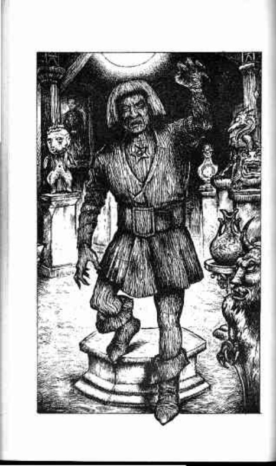
You enter a large chamber, lit by a magical globe of light hanging in the air. The room is crammed full of objets d'art. Paintings, crystal ornaments, vases, antiques and other valuables stand on plinths and shelves or are affixed to the walls here. A fortune - but you cannot carry it! You begin to look around for anything small which you could carry and take as treasure. As you are doing this, one of the wooden sculptures shakes itself and advances to attack you; it is between you and the door, so you must fight! WOOD GOLEM SKILL 8 STAMINA 6 If you win, turn to 168.
You fling open the door, then slam it shut behind you to keep the squeaking horde at bay. You find yourself in a dusty chamber with a wooden spiral staircase leading upwards; it is dark and cobwebbed, so you need your lantern to see by. As you head towards the filth-encrusted wooden steps, two man-like figures loom out of the shadows. The stench of death is strong about them, and their half-rotting hands clutch rusted swords! Roll one die and add 2. If the total rolled is less than or equal to your FAITH, turn to 217. If the total is greater than your FAITH, turn to 265.
Lothar asks you to turn round while he gets something from a wall-alcove with a secret door. He comes back with a bunch of keys and a wooden stake with a silver-tipped point. 'These will get you into the Count's rooms,' he says, handing over the Castellan's Keys (add these to your Possessions). 'The Count sleeps in the Crypt, but the Crypt Key is in his rooms to the south. You'll need to go south and open the door at the end of the corridor outside.' The Silvered Stake, he explains, can destroy the Count as he sleeps in his coffin (add this also to your Possessions). Lothar puzzles for a moment then says to you, 'I've overheard the Count mutter to himself about something he's hidden not far away with a magical lock on it. "Forward and back," he said, "forward and back." He repeated that several times, and then laughed to himself. I don't know what he could have meant, but he surely meant something by it - he may be evil, but he isn't mad!' This story makes no sense to you now, but who knows what you may find later? You thank Lothar for his invaluable help, wish him well, and follow his directions to the door at the south end of the corridor outside: turn to 319.
Do you have a Magic Sword? If you have, turn to 298. If you haven't, turn to 208
You entera large room filled with all sorts of strange equipment: tables and charts showing the planets in the heavens, varieties of herbs, rock formations and lots else besides. All this is strewn over benches and desks, pinned to the walls, and even scattered over the floor! Sitting at one desk is a white-haired tall, thin man with pince-nez glasses perched pre- cariously on his beaked nose; he is poring over some intricate diagrams and muttering to himself He looks up at you. 'Er, pleased to meet you, I sup- pose. I am Karl-Heinz Matthaus, Alchemist-in- Residence. Something I can do for you?' He appears unarmed and looks like a kindly old man. He looks back at his work, clearly not interested in you. Will you Attack him? Turn to 251 Engage him in conversation? Turn to 205 Leave through the door in the west wall of this room? Turn to 373
Katarina begins to plot and scheme. 'There is some- thing which could kill Reiner: a silver-tipped Stake which has been blessed by a holy man. Alas, there is only one such in the Castle, and it is kept by my deadliest enemy, Lothar the Castellan. He has been plotting against my life for months now. I beg you to kill him for me, and then you can obtain the Stake and kill Reiner. Lothar will never give you the Stake freely!' Will you agree to go and kill Lothar (turn to 198) or refuse to kill the man (turn to 248)?
TRUEHEAL is a powerful spell which will regain lost STAMINA points for you, up to one half of your Initial STAMINA (rounding odd numbers up). So, for example, if your Initial STAMINA was 17, the spell will heal 9 lost STAMINA points. You can cast it at any time, except during a combat. Return to 102.
You must fight the two wolves together here. On each Attack Round, roll two dice to determine the Attack Strength of yourself and of each wolf. The combatant with the highest Attack Strength of the three will get in a damaging sword-blow or bite during that Attack Round. If you manage to strike one of the wolves, roll one die to see which wolf you hit. On a roll of 1-3, you strike and wound the first wolf; on a die-roll of 4-6, you strike and wound the second wolf. The wolves run around and dart in and out at you, so it's a matter of luck which one you strike! SKILL STAMINA First WOLF 6 5 Second WOLF 7 8 If you win, but not before the second wolf has bitten you at least once, turn to 266. If you win without being bitten by the second wolf, turn to 314
Your FAITH is useless against this Stench Ghoul, a creature fired by a malice that has grown insatiable over years of imprisonment, so you must fight! Because of the nauseous stench, you must subtract 2 from your SKILL for the duration of this combat only. STENCH GHOUL SKILL 8 STAMINA 9 If the Stench Ghoul hits you three times, turn at once to 127. If you win, turn to 180.
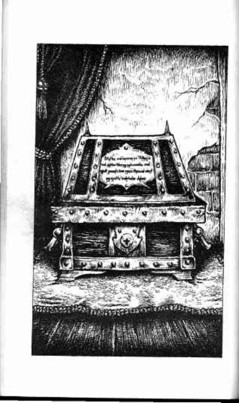
There is a group of obscure runes on the plaque you manage to decode them into letters, but they don't make sense, You puess that they have to spell out sore phrase, hidden within these let- ters, to release a magical lock on the chest and so felease the treasure within. Whatever is in there must be of great value to be protected like this! The letters read Gfgfho sid bqnnvq pe Thffgqjde sid dgbho Ibhm ng sid wzmhbmu nod ugsdf gvmeqfc bme ejeux tdqzszud mhojt ng ejmfru zslptsdsr dqbeu Simple, isn't it? When you have decoded the trans- ¢ription, you will know the number referred to there; turn to the paragraph with the same number to claim the treasure inside the chest, which you can do by whispering the name of the person referred to. If you decide to give up and leave this fine treasure behind, heading for the Crypt, turn to 191 ! The Wraith strikes at you with its chilling talons. Do you have a Magic Sword? If you do, turn to 200. If you don't, turn to 231
The Wmith skikes atyou with its chilling ralons. Do you have a Magic Sword? If you do, turn to 200. If you dorit, turn to 231.
This speil is useless. Although skeletal, this is a specially enchanted monster, not-an undead crea- ture. You will have to fight it. Turn to 22
You cough and the man, having woken, looks up nervously at you. He offers you bread and some hot soup from a pan by the fire (this will restore 4 lost STAMINA points), and tells you who he is and what heis doing here. - The forester, Barandrun, says that he was once a wattior, but that he tired of battle and bloodshed Now he prefers to live alone, at peace with the creatures of the forest. Now, however, they have mostly disappeared, and this saddens and worries him. He is sure that it is the evil from Castle Heyd- rich that is frightening them away. You feel con- fident that you can tell him about your quest. He commends you on your bravery and says that he may be able to help you a little. He knows that there is at least one good man in the Castle who might be helpful. Lothar, the Castellan of the Castle, used to be friendly with Barandrun. 'But I have not seen him in some months; I do not even know if he still lives. Perhaps he too has fallen under the Count's sway, or been done away with. Butif you meet him, - he may be able to help you.' Barandrun also gives you a gift: a string of cloves of garlic which he gets from a small herb-garden at the back of his cottage. At his urging you place this OO a ooo round your neck; add Garlic to your Possessions Barandrun offers you a safe place to stay. If you didn't sleep at the Gnome's hut, you must sleep here (recover 4 lost STAMINA points). Whether or not you sleep here, you resume your journey in the afternoon: turn to 228
The third and final hit by the Ghoul paralyses you and the repulsive thing settles down to eat your immobile body. You are still conscious as you are eaten alive, a horrible end to your adventure!
You unlock the rusty door and encounter darkness beyond; you need a light-source here. Stepping in you make out a number of suits of armour and military trophies round the wall -a stag's head with spreading antlers, the bristly head of a huge wild boar, and others. The room is dank and dusty and cobwebs hang everywhere. Suddenly there is a rusty clank and one suit of plate mail, armed witha bardiche, trundles towards you! You can stand and fightit (turn to 153) or try to slam the door and lock it behind you, evading this magical creation (turn to 215
You are able to strike at the cowering Wraith before itcan attack you. Turn to 200 and deduct 2 points of stamina from the total given there for the Wraith to allow for the damage inflicted by your first strike '
You step back quickly to avoid a small cloud of green gas that has been released from a crushed vial; this soon disperses, so you advance cautiously to in- vestigate what the Count has hidden here. You find a bundle of letters from various of the Count's Mauristatian servants; the authorities there will be interested in these! You also find, wrapped in a white silk cloth, an ornate crystal vial containing a colourless, odourless liquid. From markings on the vial you suspect this might be Holy Water which the Count has hidden in order to keep it away from i anyone trying to use itagainst him. You take this, so add Holy Water to your Possessions. Lastly, you i pick up an exquisite gold brooch set with rhodo- chrosites and a topaz; this is worth 7 Gold Pieces il so add it to your Treasure. Now you open the safe turn to 271
You enter a lounge where nondescript carpets and plain wooden furniture litter the scene. You notice herbs and other plants, and an open door to the wall-hangines displaying a bewildering variety of west. From that doorway a man enters; he looks absent-mindedly at you. He is middle-aged and has a mane of greying black hair tapering to a widow's peak above his face, which is dominated by his pale green eyes. He is dressed simply in white and grey robes, and he carries a tray with a decanter and goblets, which he puts down as he greets you. 'Iam Gunthar Heydrich. What is your business here?' he asks you. He seems kindly enough. Will you talk to him (turn to 15), or attack him, being distrustful of any member of the Heydrich family (turn to 92)?
Slumped over the remains of the Count, you are awakened from your exhausted reverie by the voice of Nastassia calling to you. You unchain her (if you haven't done so already). Her deep blue eyes look into yours, and then she throws her arms round you, calling down blessings on you for saving her from a terrible fate. By a stroke of good fortune she is a healer, and she attends to your wounds expertly recover 4 lost STAMINA points. You tell her how glad you are that you have freed her from the evil Vampire Count; but Nastassia's eyes grow wide and she cries out, 'Oh no, it wasn't he who was going to kill me. It was his sister!' You have a sinking sensa- tion in the pit of your stomach . . . and then she is here, standing in the room before you, gazing straight into your eyes! If you have met Katarina Heydrich before, turn to 176. If you haven't met her before, turn to 66
The bats surround you, and you can't see anything as you try to fight them off. Their wicked little teeth are bloodied by feeding on something - or perhaps someone. There are too many to fight; you have to retreat back down the stairs. You can try to climb up to the bell tower again, hoping the bats will have flown off (return to 33} or go back to the main courtyard (turn to 380 = J
a Sar a ue Karl-Heinz agrees to brew the potion for a reduced fee, but he will take all the Treasure you' ve got! Turn to 79
You search this room and pick up some small trink- ets worth 4 Gold Pieces; add these to your Treasure There is only one other door in this room, in the west wall, so you decide to open it. Test your Luck: if you are Lucky, turn to 315; if you are Unlucky, turn to 253 ce
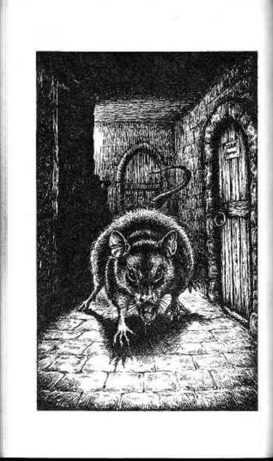
A great shadow suddenly darkens the passage. A massive snarling rat, as big as a large dog, is galloping down the passageway towards you. Its red eyes glow with malice and, although one of its chisel-like yellow incisor teeth is partly chipped off, it still looks as if a bite could be most unpleasant! It is so quick that you have no time to run; you must fight. GREAT RAT SKILL 7 STAMINA 8 If you win, turn to 97.
' Drinking red wine in a Vampire's castle? This is not red wine, this is blood, and it seems to be still warm! You spitit out in horror. Lose 1 FAITH point. Taking no more risks, you head for the west door. Turn to 45
You clamber aboard the small boat, but it has no oars - and no sail or rudder either - and it simply won't budge. You climb out again to look for something to use as an oar - but when you do, the little vessel drifts out into the river and remains, stationary, in mid-stream. You wade in again and try to get to it, but every time you approach, it moves away from you of its own accord! It is obviously a magical craft - and you can't control it. You'll have to wade across after all. Turn to 187.
Roll two dice and add 3 to the total. If the result is less than or equal to'your SKILL, you just manage to shut the door and get out: turn to 320. If the result is it greater than your SKILL, you can't escape in time and you must fight, so turn to 52
i The Vampire recoils in disgust from the garlic round il your neck and lashes out at you in frustration! Deduct 2 points from your STAMINA, but the charm is broken. Count Reiner Heydrich is looming very close to you, so you have to fight him with your sword. You can use the Greatstrike spell if you wish to and if you possess this spell (turn to 346), or just set about you with your weapon immediately (turn to 26 4 E
The gates are made of solid, inch-thick iron bars you cannot open them. Roll one die and add 2: if the total is less than or equal to your FAITH, turn to 192 if it is greater than your FAITH, turn to 243
As you rummage around, one of the arms on the shelves suddenly grabs your arm and holds it quite firmly. It is not hurting you, but it won'tlet go. You can try to hack at the limb with your sword, since it isn't grasping your sword-arm (turn to 96}, or just i stay put and see what happens (turn to 38 is a
You strike at Katarina with your sword, but it " doesn't harm her! Laughing, she draws an ice-blue dagger to strike at you. Unable to hit her, you run for the door, but at her command a large rug wraps itself round your legs and brings you down heavily As it enmeshes and begins to choke you, Katarina brings over a heavy copper bowl, places it under your throat, and fingers her dagger, laughing! Your adventure is over!
The eyes of the portrait turn red and blood begins to seep from the canvas! This is certainly unnerving but you overcome your fear. Now will you Search this room? Turn to 193 Leave, and open the door at the east end of the corridor? Turn to 351 Leave, and follow the corridor round to the south? Turn to 166
Katarina laughs, brushing aside the useless object and slashes at you with her dagger. Lose 2 STAMINA points. Turn to 164
The Sage whips out a Silver Key from a waistcoat pocket after taking your fee. You notice that the key has the number 378 engraved on it. 'That'll get you in,' he says. 'Back down the corridor to the west turn right, and open the north door with this.' Return to 75
As you advance, you sense there is something wrong with your footing - and you just manage to step back in time from a covered pit trap! Skirting round it, you continue safely along the corridor. Turn to 157.
People are eager to tell you how to get to the Castle! They warn you that the road the carriage travels on is very unsafe; only that ghostly vehicle can traverse it safely. They point out that there is a trail heading north-east through the forest and that this leads to the Castle. If you are lucky you may avoid the - forest's wild animals; there is a forester's cottage ' along the way where you could rest and sleep You'll have to cross the river, though; the one- armed man in the tavern gives you 2 Gold Pieces for the fee the ferryman will ask of you You set off along the trail and soon you find yourself enveloped in the forest. The branches of the trees seem to be twisted and contorted into grotesque shapes, and in the distance owts hoot and wolves howl. The forest floor is bare of plant cover, and your boots crunch on the gravelly earth. It grows lighter, perhaps dawn is approaching - and then an arrow whistles past your ear and embeds itself in a tree trunk! In the gloom to your left you see a large bear lumbering towards you, and to one side a slim figure is nocking ancther arrow to a longbow, ready to fire at you! Will you Attack the archer? Turn to 246 Attack the bear? Turn to 295 Try to parley with the figure whoever it is? Turn to 344 Make a run for it and try to get away? Turn to 197 BR
What will you try to use? Will you strike the organ with Your sword? Turn to 175 The heavy bunch of candlesticks? = Turn to 203 Some other object? Turn to 261
You are now fighting a direly evil undead creature and the Baobhan Sith casts a spell at you! Determine whether you or the Baobhan Sith has the higher Attack Strength for this Attack Round (the Baobhan Sith has a SKILL of 9). If you have the higher Attack Strength, you strike her and spoil her spell; turn to 263 to finish the fight, subtracting 2 from the STAMINA total given there for the Baobhan Sith because of this hit. But if the Baobhan Sith has the higher Attack Strength, then she will cast her spell and evade your blow, so turn to 207
You are in luck, Wilhelm Heydrich, the poor idiot cousin of the Count, is fairly lucid today. He is happy to have a guest and soon you are drinking Analandian sherry as Wilhelm talks about his cousin. 'He won't havea mirror in the place, will he? He's terrified of a silver mirror! I've no idea why There's one in the relaxation room just beyond the dining-room, and you'll never find Reiner lurking in ' there, oh no!' He gulps greedily at the fortified wine. 'And, then, old Siegfried's stuff frightens the living daylights out of him - well, it's not quite the tiving daylights, is it? The sword, you know, he's especially frightened of that. Hid it himself after he did away with Siegfried, in a book, believe it or not Don't know about the armour. But he took the shield up into the tower, down there -' he points to the corridor. Wilhelm is drinking heavily now and beginning to ramble, so you say goodbye to him and leave. Back in the corridor, you decide to check the towerand the shield Wilhelm mentioned, so you go to the south end of it and open the door on the east side there. Turn to 252
' Roll two dice. If the total is less than or equal to your SKILL, turn to 250. If it is greater than your SKILL you are too slow and must fight: turn to 103
The Animated Armour advances upon you and while the cleaver-like bardiche blade is rusted, it still looks sharp enough to cause an unpleasant wound! ANIMATED ARMOUR SKILL 8 5TAMINAQ lf you win, there is nothing of value or interest here - all is rusted and useless. You can try the door on the east side across the balcony (turn to 302) or the one at the far southern end of the balcony (turn to 244
There are two doors in this bare chamber, so you decide to open one of them. Will it be the door in the i south corner of the west wall (turn to 294) or the silver-handled door in the middle of the south wall turn to 131)?
There is little point in casting this spell, since Katar- ina is very near you and in any event she isn't going to run away! She lashes out at you; lose 2 STAMINA points. Now you must fight with your sword, so turn to 164 oe
You make a lucky find in the middle of all the junk - a crystal vial with silver filigree banding worth 4 Gold Pieces (add this to your Treasure). You return to the entrance hall, and here you can open the north door (turn to 101) or take the east passage turn to 256
Some ten feet along the corridor you stand before two doors, one on either side of you. The door to the north has a dusty plaque which you read after clearing away the cobwebs; it says simply: 'Boris the Dnunkard'. This does not sound too promising. The southern door has a plaque which reads: 'Chancel- lor Conrad Schmidt, the meanest man in Mort- vania'. Ahead of you, you can see a T-junction with north and south turnings, and also a door at the end. Will you Enter the tomb of Boris the Drunkard? Turn to 210 i Enter the tomb of Chancellor Schmidt? Turn to 359 Move on to the T-junction ignoring these doors? Turn to 230
The only spells of use here are Greatstrike (to cast this, turn to 346) or Jandor's Bolt (to cast this, turn to 76). If you have neither spell available, turn back to 274 to select another method of attack.
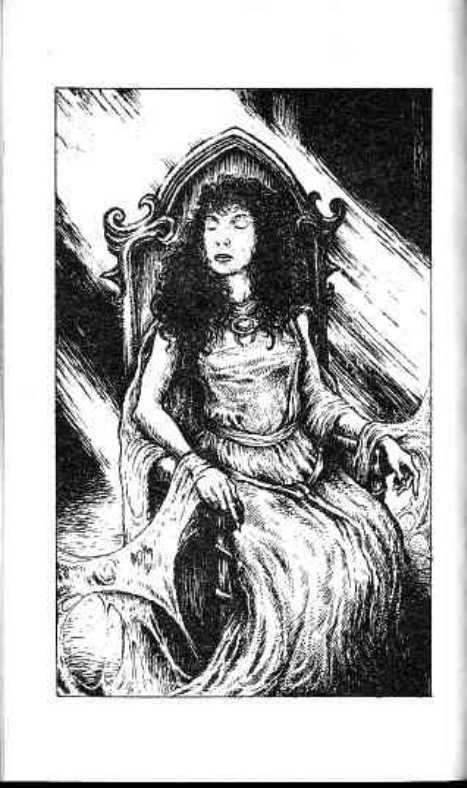
You climb the stone steps, cobwebbed and filthy past growths of mould and fungus on the walls, and ascend to the top of the tower. Moonlight streams into the circular chamber through tinted glass, and it seems almost as if the shadows in this place are skulking and watching. Opposite you, bathed in moonlight, is a young girl sprawled across a chair bound by her wrists and ankles with a mesh of fine cobwebs - but they could be a lot stronger than they look, perhaps even magical. She is very pretty in- deed, with long curly auburn hair and a fine smooth complexion. Roll one die and add 4. If the result is less than or equal to your FAITH, turn to 225. If the result is greater than your FAITH, turn to 269
GREATSTRIKE is a spell that is usable in combat when you wield a sword. You cast the spell before you strike and, if you have the higher Attack Strength and land a blow on your enemy in that Attack Round, your blow does 4 extra points of i damage. If you do not land a blow in the Attack Round when you use the spell, though, the spell is useless. And you must decide if you want to use this spell before you throw the dice to find out who has the higher Attack Strength! Return to 102 ee
You open the door with your keys and enter a bare stone antechamber, decorated with wall-carvings of rats, bats and wolves. Opposite you is a door and from a narrow slit along its base, baleful red light spills out from a chamber beyond. Roll one die. If you roll 1 or 2, turn to 279. If you roll 3 or 4, turn to 325. [Eyou roll 5 or 6, turn to 356
You pay the Gnome '- deduct .2 Gold Pieces from your Treasure -and he takes you across. He doesn't need to row, he just whispers to his magical boat and it drifts straight across! You get out on the opposite bank. Turn to 383
The rats nip you with their sharp, yellowed teeth - lose 2 STAMINA points; but you get out safely and shut them in behind you. Now you can head for the Crypt, if you haven't been there already (turn to 90) or head for the brass doors to the north (turn to 2)
Conduct the combat normally; turn back to 106. Your opponent is not actually a Vampire, so if you have the magical sword, Nightstar, you can claim a bonus of only 1 to your SKILL in this combat.
The tentacles of the mist creature wrap round your throat and you can feel the sensation of small but sharp needles digging into your flesh! If you have the Curse of the Healer, turn to 100. Otherwise, turn to 6
Looking down the corridor, you see that there are doors opposite each other on the west and east sides halfway down, and then another door on the east H side right at the end. Will you Open the first east door? Turn to 118 Open the east door at the end of the corridor? Tui to 252 Open the west door? Turn to 240
The Vampire has charmed you; you cannot attack him! He steps down, triumphantly, and his fangs are bared as he reaches for your throat. Are you -Wearing garlic? If you are, turn to 140. If you aren't j turn to 72 a a a rg
Having overcome the guardian here, you snatch up a couple of silvered crystal birds which are small enough to carry. These are worth 3 Gold Pieces for the pair (add them to your Treasure). Now Test your Luck. If you are Lucky, turn to 385. If you are Unlucky, turn to 270 y 64-6 ae
You find the jar and rush back with it to Karl-Heinz the Alchemist. "Wonderful," he says, grabbing it with glee. 'The final ingredient for my potion of longevity! I'll soon be young again, And I have your potion ready too." You gulp down the evil-smelling thick green sludge he gives you. It is utterly disgust- ing and gives you severe stomach cramps; lose 4 STAMINA points. But after resting for a while, you find that it has worked -- no more (Major) Lycan- thropy Affliction! You thank the Alchemist for his help and return to the corridor, north of the entrance hall. From here, will you Open the north door? Turn to 332 Open the west door? Turn to 221 Go down the eastern side-passage? Turn to 353
Attempting to escape is hopeless; the wolves are much faster than you and can track your scent. As you run, you stumble and fall (lose 1 STAMINA point) and the first wolf bites you as you are getting up (lose 2 more STAMINA points}. You must fight so turn to 121
You run for the south door, fumbling with the keys. Lose 3 STAMINA points caused by rat-bites; if you are still alive, your trembling hands manage to slip the key into the lock; turn to 244.
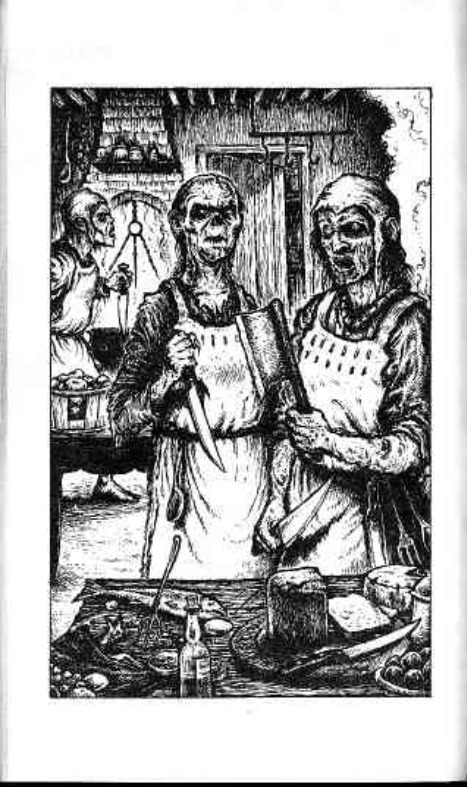
You push open the door and come upon a scene of domestic homeliness - a cook and two servants at worktables preparing food. However, there is an unpleasant smell mixed in with that of the food: a vile, rotting smell which catches at the back of your throat. The workers look up at you with mindless eyes - and you see at once that they are Zombies! Roll one die and add 2. If the result is less than or equal to your FAITH, turn to 238. If the result is greater than your FAITH, turn to 275.
You wound the Spectre before it can fully material- ize. Turn to 298 to finish the fight, and you may subtract 2 from the STAMINA total given there for the Spectre as a result of this initial blow
You clamber into the coach, and the horses set off at a gallop - making no sound as they move! You settle back into a comfortable seat draped in black. Looking through the heavy purple-curtained windows you see nothing outside but thick swirling fog, but the wolf-howls you hear send shivers down your spine. Roll one die and add 2 to the number rolled. If the total is less than or equal to your FAITH, turn to 223. If the total is greater than your FAITH, you continue your journey until the coach stops, close by the Castle, and allows you to dismount before vanishing into the fog; turn to 362.
Your sword is quite useless against something of this size; you don't know where to strike to cause any effective damage. Lose 2 STAMINA points from I tat-bites before you give up and flee north; turn to 335-
If Katarina has tried to charm you before and failed turn to 20. If she has tried to charm you before and succeeded, turn to 276. If she has not tried to charm you previously, turn to 293 i wer |, = -- al OO Et
You find enough hot soup for a meal. This must be eaten here; you cannot carry it with you (restore 4 points of STAMINA). You find a drawer in a table and take out a bag containing 5 Gold Pieces - but you also prick your finger on a discoloured needle inside the drawer. You must record Slow-acting Poison in the Afflictions Box on your Adventure Sheet; this will affect you until you can find a cure for it, It works as follows: every time you have to fight at the beginning of the combat you must subtract 1 point from your current STAMINA, and also 1 point from your Initial STAMINA! Thus you will gradually become severely weakened. Only if you can find a treatment to cure you of this Affliction will you be able to restore your Initial STAMINA to the level you started with If you didn't sleep at the Gnome's house, you must sleep here now, since you are very tired. When you are Teady to continue, you travel on through the afternoon; turn to 228
The Vampire reappears in the room in human form! Add 8 points to the STAMINA score he had when he escaped. Fight him again, and if you manage to reduce his STAMINA score to 4 or below once more turn at once to 212 ee
The silver bell radiates a sense of goodness to you. You look it over carefully, and inside the bell you find a name etched: SIEGFRIED HRYDRICH Although it could raise an alarm, on impulse you ring the bell; turn to 280
Wiping the last of the slime from the Stench Ghoul off your sword, you take a quick look around and find a leather bag in the sarcophagus. This contains 5 Gold Pieces, which you add to your Treasure Now you can try to open the tomb of Boris the Drunkard, if you haven't already investigated it turn to 210), or head down the corridor to the T-junction (turn to 230
Roll one die. If you roll 1 or 2, turn to 136. If you roll any other number, turn to 47
You open the door. . . and trigger a magical trap There is a searing flash of light and heat; lose 4 STAMINA points. You are partially blinded and can barely see into the darkened room beyond However, you can just make out the shape of a four-armed skeletal figure with glowing green eye- sockets, armed with a scythe, bearing down upon you. You can either fight it, weakened as you are turn to 52) or try to shut the door and flee (turn to 139 ---_-SSao_o___------__a-_au.. 2. Qc» cxc"_"
Karl-Heinz refuses your offer. "You don't get basi- lisk livers and squid ink for nothing, you know. I've got costs to cover,' he laments. He looks thoughtful then continues: 'T'll tell you what. In the kitchens there are some herbs ] want, but theyre protected by the Count's guards. Go and get them for me and I'll make up the potion for you in return. There are lots of jars there, but there's only one | need They're all numbered, and I want jar number 169 Go and get it for me.' He tells you how to get to the kitchens; leave by the west door in his room, go back to the entrance hall, through the north door, and take the first door to the east in the corridor beyond Make a note of the jar number he needs in the Notes box on your Adventure Sheet You take your leave and go back to the north-south corridor outside the Alchemist's room. You could open a door opposite you in the west wall if you haven't already done so (turn to 240), go to the south end of the corridor and open the door in the east wall there (turn to 252) or return to the entrance hall and open the north door there (turn to 101
Having destroyed the loathsome remains of Doktor Faustus, do you want to Finish searching this room? Turn to 142 Leave here and open the eastern door? Turn to 371 Leave and open the southern door? Turn to 8
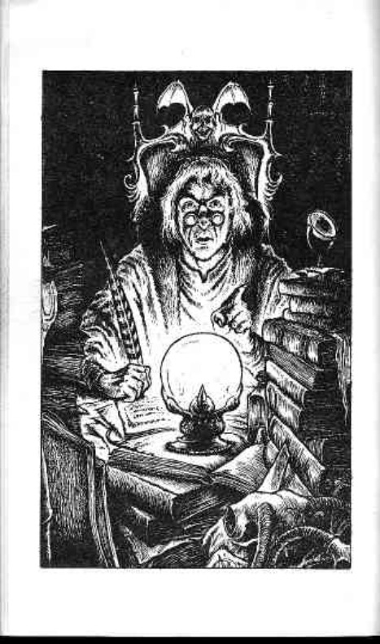
The Sage ponders. 'Ah yes, a young woman was dragged in recently, and the Count had her taken down to the Crypt. He keeps people prisoner down there, and then either drinks their blood or hands them over to Katarina. Funny creature, Katarina can be very charming at times!' He looks almost fond at the thought of Katarina. Return to 75
The bat's vicious bite strikes home on your already injured neck, and the hateful flapping menace rips your jugular open. You collapse in agony as your life's blood pours away on to the floor. Your quest ends here
You step carefully on the stony bed of the shallow river, wary of pitfalls. You have nearly crossed to the other side when suddenly you see a slithering shape come snaking across the water towards you and a yellowish green serpentine back is visible just under the surface of the water. You can stay where you are and fight the River Snake (turn to 236) or try to outrun the reptile and get to the bank (turn to 285 eeeeeeEeEeEeeE-e---E--eEEE
Gunthar stares intently at the book with the magical page. 'But this is Siegfried's sword!' he says in amazement, looking at the page. 'Some great sor- cery has imprisoned it within this book!' Then he becomes unhappy and tells you that the only way he can think of to free it would be to enlist the aid of Katarina's magic. 'She will ask some service of you in return - I shudder to think what it might be,' he says, adding that Reiner's sister is every bit as evil as the Count himself. Gunthar sits down with his head in his hands, despairingly. He may be too depressed to do anything, but you are a warrior and you are here with a purpose! You return to the landing and open the west door there. Turn to 294
Do you have a Crucifix and/or the Shield of FAITH? If you have at least one of these items, turn to 220. If you have neither, turn to 259
You are too slow! The Zombies are upon you before you can close the door and get away. Turn to 81 =
You reach the landing, hurry down the stairs and make your way back to the courtyard. You take out the Crypt Key and head towards the forbidding Crypt with its heavy, iron-railing gates and leering gargoyle heads. A huge shadow looms over you and you spin around in panic - but it is just a low-flying bat, silhouetted against the moon. The moonlight is a sickly, diseased yellow tonight, and there are other flittering things in the pale light and the shadows round you. Do you have the Major Lycanthropy Affliction? If you do, turn to 204. If you don't, turn to 43
Your efforts to penetrate the Crypt don't go un- noticed, Drifting up the steps comes a tiny, dwarf- like, spectral figure, black and almost featureless You can sense the chilling evil in the atmosphere which cloaks it; its tiny black claws reach out for you! Will you Fight the Shadow? Turn to 292 Run to the south doors (if you have not done so already)? Turn to 18 Run to the northerly brass doors? Turn to 2
Roll two dice. Ef the total is less than or equal to your SKILL, turn to 249. If it is greater than your SKILL turn to 300 -- >>> ESS
The Forcewall keeps the Major Thassaloss at bay but not for long, Ahead of you, you can see that the corridor leads to steps which descend to the north east and south, and you make for one set of steps compelling the Thassaloss to keep its distance from you with your magical aid. Turn to 224 to decide which set of steps to take; but you must make a note that, if you have to return back up a set of steps, the Thassaloss will still be lurking here and you will have to fight it, turning to 22 to do so, unless you destroy Count Reiner Heydrich the Vampire before you return!
The scream of the Baobhan Sith is horrifying and blood-curdling. You are dreadfully weakened by it half paralysed, you cannot resist as she walks over to you and draws a razor-sharp dagger from her dress to slay you!
Lothar tells you to keep away from Katarina; she is dangerous, and taking on both her and her brother would be extremely difficult. He says that if you could destroy Reiner, then he and Gunthar, the healer who is Reiner's brother, could probably deal with Katarina. He says he also has some items of value to you; turn to 116
You min away into the forest. In your haste you drop some supplies, so deduct 2 from your Provisions Roll two dice and add 3 to the total. If the result is less than or equal to your SKILL, you manage to evade your pursuers and eventually you arrive ata hut by the riverside (turn to 13). If the result is greater than your SKILL, the bear and the archer catch up with you, and you can either attack them turn to 295) or parley with the figure with the bear- a young woman, as you now see (turn to 344
Katarina smiles happily. She tells you to go into the corridor, head south, and open the second door to the east. Turn to 227
The woman laughs and produces an ice-blue dagger from the folds of her dress. Fight her normally; she has a SKILL of 10. If you manage to hit her four times, turn to 226.
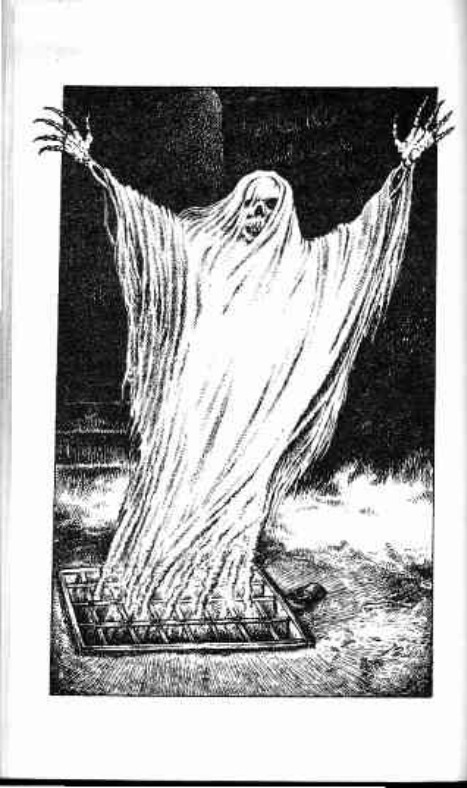
The Wraith is a highly dangerous enemy, and your sword-arm must serve you well in this combat! WRAITH SKILL 8 STAMINA 9 If you win, but the Wraith has wounded you, turn to 290. If you win without being hit at all, turn to 316
You try to strike at the Horseman with your sword but he just laughs as your blade passes through thin air! You cannot harm him. He whips the horses into a gallop, leaving you standing, looking foolish Your belief in your own abilities is shaken by such an early failure; deduct 1 FAITH point. You need to find another way to the Castle, so turn to 148
Poor young Wilhelm, cousin of the Count, is quite mad, and you can get only scraps of information, of doubtful value, out of him. He mutters about a glowing sword hidden in a book, and other seem- ing nonsense. You leave him to his ramblings and try the door at the south end of the corndor. Turn to 252 ee
You manage to lift the very heavy candlesticks with a grunt and bring the massive weight down on the organ keyboard, which collapses under the load and splits the bellows in two. The music comes to a screeching halt, Lose 1 STAMINA point from rat- bites, but now the infernal din has stopped the rats start milling around in confusion and they ignore you. You can go through the north door here (turn to 361) or leave and open the door at the southern end of the balcony (turn to 244
Your transformation is now complete. Your lupine form struggles to free itself of your leather armour, but you shake it off and run around in the yards and corridors of the Castle, howling. Soon a great bat flies overhead and swoops down; the Count has come to take control of his new pet! Yours is a fate worse than death.
The Alchemist says little, although he does tell you that he is empioyed by Katarina - the Counlt's sister - to prepare potions and powders which enable her to keep her youthful appearance, together with another treatment which Karl-Heinz seems deliber- ately to avoide mentioning. 'Katarina looks very young for a woman of 76,' he mutters laconically You can't really ask about the Count and how to kill him (Karl-Heinz might tell someone what you're up to!) and there's little else you can get out of him. But he could be helpful to you if you have the (Major Lycanthropy Affliction. If you do, turn to 318. If you don't, you leave through the west door in this room so turn to 373
You feel a horrid stinging sensation as the bat bites you a second time. Add the Curse of the Bat to your Afflictions box on your Adventure Sheet. As yet you can feel no ill-effects from the bites, but who knows what may happen to you later? Turn back to 45 to finish the combat.
The evil magic-working woman points a single fore- finger at you, and green shards of light shoot from her hand and surround your body. They sink into you and you feel chilled, faint and weak. Deduct 3 points from your STAMINA, and you must also subtract 2 points from your SKILL - but the SKILL loss (alone!) is temporary; it will last until you have fought three battles (including this one), so you should record this in the Notes box on your Adven- ture Sheet now. Now you close to fight with her, so turn to 263
Your weapon is useless against the Spectre, which strikes you; you lose 2 STAMINA points. You run from the room, trying to get back to the balcony, and the swiftly moving Spectre easily keeps pace with you, striking at your back. Roll one die. If the number rolled is a6, turn to 310. If you roll any other number, turn to 365
'Well, there's poor young Wilhelm the cousin - mad as a hatter, you know. Quite harmless. Siegfried's dead of course - Reiner's elder brother, he was Count until he, ah, disappeared and Reiner took over. Then there's Gunthar who lives upstairs; just go right up and knock on the silver-handled door. He's a healer, so he says. Not a bad sort. Katarina the Count's sister, she's a beautiful and peculiar woman. Very capricious, with a temper like a wildcat, but quite captivating, too. She's got a lovely suite of rooms upstairs at the end of the corridor past the landing where you go up.' Return to 75.
You unlock the door with your keys. It opens into a small, bare, stone chamber, with a plain stone sarcophagus in the centre. If you want to investigate the sarcophagus, turn to 262. If you would rather leave, you can either open the door to the Chancellor's tomb, if you haven't already done so (turn to 359), or head down the corridor to the T-junction (turn to 230).
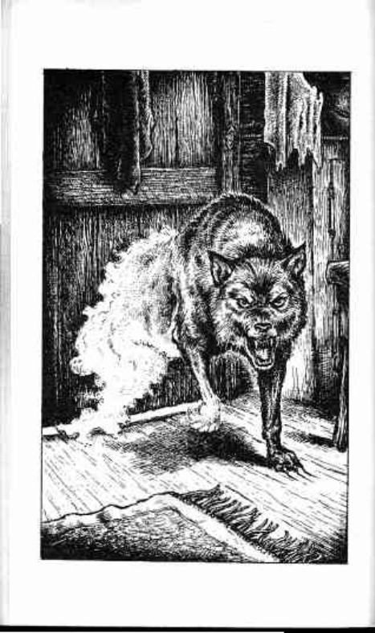
The Gnome shows you to a bunk bed, where you settle down to sleep - after wedging the door and window shut to keep intruders out! You sleep well recover 4 lost STAMINA points), but at about noon you are suddenly awakened by a growling noise and open your eyes in time to see a huge wolf materializing in the room, formed out of a gas cloud which has seeped under the door! You can grab your pack and weapon and try to get to the door and make a run for it (turn to 309) or stay and fight this creature (turn to 260
In desperation, the Count will try to bite your throat rather than batter you with his fists. You may sub- tract 2 from his skILL when he tries this biting attack. His bite causes normal damage (2 points) on the first hit - unless you have the Curse of the Healer (if you do, his bite causes double damage - 4 points!). If the Count bites you twice, turn at once to 268. If you win, turn to 339 er oe
You prise open the heavy stone lid just far enough to be aware of a glimmer of soft light inside. The skeleton within, clad in rusted chainmail, has a glowing longsword in his hands. Gently, you re- move this and take it. It is a straightforward Magic Sword: you may not add anything to your SKILL when you use it, but at least with this weapon you can harm Reiner Heydrich the Vampire! Add the Magic Sword to your Possessions - unless you already possess a Magic Sword, in which case you leave this one behind. There is no extra value in having a second one! You leave and climb the stairs; from here, you can descend the northerly stairs if you haven't already done so (turn to 257) or descend the southerly stairs turn to 161 3 a i -_ ct ee
You find nothing of interest or value, so you return to the entrance hall. Here, you can open the north door (turn to 101) or follow the east passage (turn to 256).
Roll two dice. If the total is less than or equal to your SKILL, turn to 283. If the total is greater than your SKILL, turn to 153
You throw your Holy Water at the Vampire. Roll one die and add 1, to get anumber between 2 and7 this is the number of points of damage the blessed liquid does to the maddened undead creature whose skin now seems to be on fire! If you have another one available, you have time to throw a second vial, with the same results; or you can attack by sword (turn to 26) or spell (turn to 158). Keep a note of how many points of STAMINA loss you have already inflicted on the Count! il
Oe pel: ' el Ie [ieee el é uy The 217 These Zombies - as you can see these pathetic things must be - hesitate and allow you time to dash up the stairs without having to ight. Turn to 311
One of the wolves stops to gobble down the food subtract 2 meals from your Provisions. The larger wolf, however, ignores the food and attacks you snarling and drooling. Turn to 121, and fight the second wolf only a es_ee__Neeee- eS
You unlock the drawer, but you hear the sound of splintering glass as you do so. You must Test your Luck; if you are Lucky, turn to 130, but if you are Unlucky, turn to 387.
'You have the cross, but you lack the weapon to destroy Reiner,' says Siegfried grimly. Do you have the Book of Swords? If you have it, turn to that paragraph which is one half the number of the magical page in that book (so, if the magic page were numbered 240, you would turn to paragraph 120). If you don't have it, turn to 259.
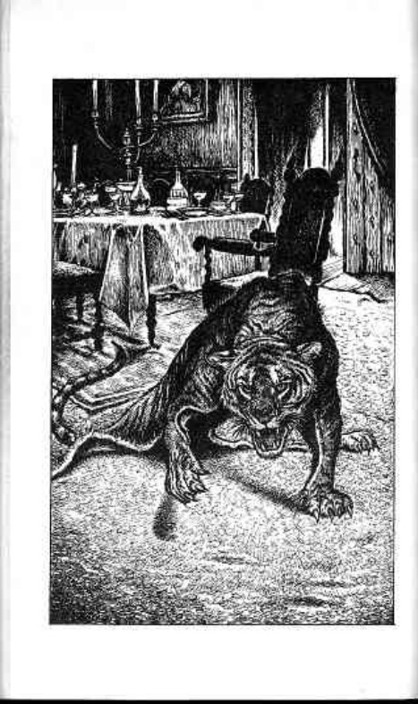
You open the door into a large and plushly decor- ated dining-room. A huge, centrally placed mahog- any table is flanked by chairs; it groans under a weight of silver cutlery, utensils and crystalware laid out on lace cloths. Heavy drapes are drawn across the windows to the west, and there is a large tigerskin rug stretched out by the north wall; just past this is a half-open door. Deciding to investigate the room beyond, you walk past the rug, but you hear a growl and a snarl, then the thing rises to its feet and its eyes gaze at you with hostility! Snarling fangs and claws and fur are about to fly at you, so you must fight this unusual enemy! TIGERSKIN RUG SKILL 7 STAMINA 7 If you win, you can take some treasure from this room: some silver items small enough to carry worth a total of 4 Gold Pieces (add these to your Treasure). You look round the door to peer into the next room; turn to 364
SHATTER is a spell which will destroy any one creature that is made almost entirely of bones, such as a Skeleton. You may cast it at any time during a combat with such a creature. Return to 102 ns -
Suddenly you feel a chill inside the carriage and there, slowly appearing before you, is a ghost! The spectral shape of a tall man with wavy black hair and green eyes, his figure almost covered by a volumi- nous black and purple cloak, sits smiling opposite you. 'The Count is expecting you,' he smirks 'although your stay will be a very short one, | fear.' He sits back and continues to smile in a leering mocking way. Then the carriage lurches abruptly and the ghostly apparition springs forward at you! Roll one die and add 4 to the result. If the total is less than or equal to your FAITH, turn to 321. Ifthe result ! 1s greater than your FAITH, turn to 272
Three sets of stairs lead downwards from the end of the corridor: northwards, eastwards and to the south. Each set of steps is dusty, the walls are mildewed and the air is dank. A powerful sense of evil seems to pervade even the nooks and crannies here! Which set of steps will you follow? Will it be The northem steps? Turn to 257 The eastern steps? Turn to 108 The southern steps? Turn to 161
You sense both a strong good and a strong evilin this chamber, but you aren't certain which impression comes from which area. Turn to 269
Katarina laughs at you again but this time her cat-like eyes flare with anger. Roll one die and add 4 If the total is less than or equal to your FarTH, turn to 286. If the total is greater than your FAITH, turn to 331
You open the door and stride into a spartan room with just a couple of tables and plain chairs, a bunk bed, and similar humble furnishings - a small chest of drawers, a plain wardrobe, and the like. Looking up from his writing-desk is a tall, well-built man in his early thirties with light brown hair and brown eyes. His crooked smile greets you as you enter 'Greetings, stranger, are you lost that you have come to this wretched place?' he asks. If you are charmed, you must attack him, so turn to 369; other- wise, you can choose to attack him (turn to 369) or talk with him (turn to 397
You head on through the afternoon into the darken- ing evening, until finally you see a castle on top of a steep hill. Roll two dice. If the total is less than or equal to your SKILL, turn to 362. If it is greater than your SKILL, turn to 277
From the body, a ghostly double of the man rises and sits up, then moves out of the coffin to stand before you. Towering over you, the shade of Sieg- fried Heydrich stares grimly down and gestures for you to follow him - pointing to the coffin! You lift the lid and gently move the body aside. Your shak- ing hands find a secret door in the base of the coffin the gap is large enough for you to squeeze through following the impatient ghost. You drop a few feet down to a stone floor and, half crouching, using your light-source you follow Siegfried's ghost along a short, narrow passage which opens into a kind of small sinrine. Siegfried points first to a small, rosy quartz vial of colourless liquid. 'Holy water,' he explains, 'you'll find that useful.' (Add Holy Water to your Possessions.) Then Siegfried looks at a very strange gilded bronze globe, lying on the white- clothed table before you next to a silver chalice. Do you have a Stake? If you do, turn to 304. If you don't turn to 189
At the eastern end of the corridor is a black door i with heavy iron bands; at the sides, to north and south, are small side-passages which also end ina black wooden door. Checking them swiftly, you find that the northern door has a plaque which Wilhelm Heydrich'. The other doors have no dec- reads: 'Doktor Pieter Faustus, Physician to Count oration. Will you open The north door? Turn to 255 The east door? Turn to 371 The south door? Turn to 8
Without a Magic Sword you cannot harm the Wraith. You are forced to flee all the way back to the entrance hall; the Wraith pursues you part of the way, but avoids going too far into the light. Roll one die; this is the number of times the Wraith strikes you in the back as you run, and you lose 2 STAMINA points for each hit! If you are still alive, you must roll a second die. If this die-roll is 1-4, the Wraith has drained you of part of your life energy: lose 1 $KILL point. If the die roll is 5 or 6, you have escaped this fate by sheer chance. You open the north door in the entrance hall; turn to 101
FORCEWALL conjures up an invisible sphere of force around you which cannot be passed through and which moves as you do. It can prevent enemies from escaping; or it can keep enemies away from you for a time, if you wish to use it as protection You will be asked if you want to use this spell in paragraphs when it is appropriate. Return to 102
You could try striking the silver bell. However, this could be dangerous, since you might rouse guards by the sound. If you want to ring the bell, turn to 280. If you would rather go back down to the courtyard, turn to 380
Have you been charmed by Katarina? If you have, turn to 25. If you have not, turn to 84.
Gunthar thanks you profusely for returning his book and rewards you with a magical potion of healing which he has cunningly concealed in a secret drawer in a cupboard. Add this to your Possessions. You can drink this at any time, except during a combat, and it will restore 4 lost STAMINA points. Thanking Gunthar for this valuable gift, you leave and open the wesi door on the landing; turn to 294
Your mobility is reduced as you are up to your knees in water, so you must subtract 2 from your SKILL for the duration of this combat RIVER SNAKE SKILL 6 STAMINA 6 If the Snake wounds you twice, turn at once to 334 If you win, turn to 383 ---S-EE ---- ESESESSS=_--ES=------ Sa
Seeing that you are growing weak, little Nastassia pluckily picks up a dagger from a nearby table and comes to your aid. She will fight on your side with a SKILL of 6 You are now in a three-way fight. In each Attack Round, roll dice for all three fighters (yourself Katarina, Nastassia) to see who has the highest Attack Strength; this will be the combatant to get in the effective, damaging blow in that Attack Round Katarina will ignore Nastassia; she will continue to strike at you in order to finish you off first! If you win, turn to 400 !
The Zombies pick up knives and cleavers, but they are keeping well away from you, You might be able to get past them and through the entrance into tne main kitchen and stores to the east if you try (if you do, turn to 282) or will you Attack the Zombies? Turn to 105 Leave and go to the north door in the corridor? Turn to 332 Leave and open the west door in the corridor? Turn to 221 Leave and take the eastern passage off the corridor? Turn to 353
The Jelly is a foul, diseased thing and it infects you with the early stage of a weakening, wasting disease. Lose 1 SKILL point . . . and things could get worse later. Turn to 313 to finish the combat.
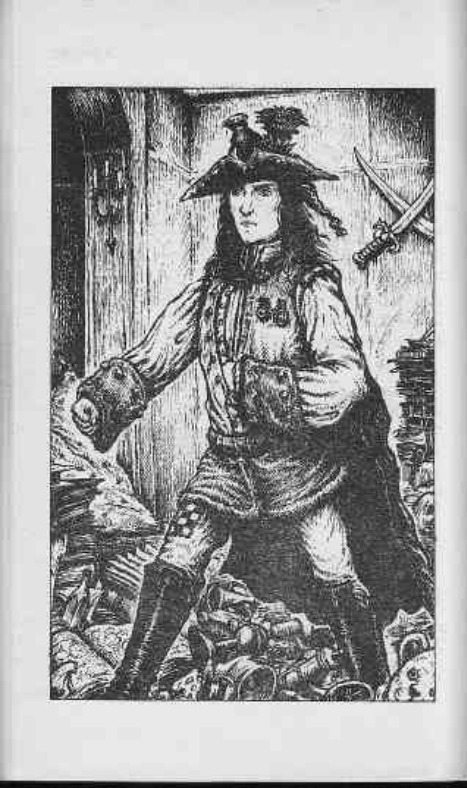
You open the door into a suite of rooms that are cluttered with cushions, papers, toys, pictures and all sorts of debris strewn all over the place! Marching up and down, clad in an ill-fitting blue military uniform and with a ridiculous tricorn hat is a dishevelled young man with long, flowing black hair and green eyes. He mutters nonsensically to himself and does not seem to have noticed you enter. He certainly seems rather lacking in his wits. Will you: Attack him? Turn to 322 Enter and talk with him? Turn to 288 Leave and open the east door opposite, if you haven't already done so? Turn to 118 Leave and open the door at the south end of the corridor? Turn to 252
You open the door, and a brilliant searing flash of light and heat injures you. Lose 4 STAMINA points and you are also partially blinded. Advancing on you is a four-armed skeletal figure with a scythe, its green eye-sockets glowing eerily in the darkness You have no time to run, and you must subtract 2 from your SKILL when fighting this monster be- cause of your half-blinded state In each Attack Round, you must roll one die in addition to the usual two combat dice. If this die-roll results in 1-3, the Minor Thassaloss will strike you with a chilling green ray from its eye-sockets, caus- ing 1 point of damage to your STAMINA. If the die-roll is 4-6, you manage to dodge the ray. The Minor Thassaloss can cause this freezing damage even when it has the lower Attack Strength in an Attack Round, making it a dangerous enemy! MINOR THASSALOSS skitL8 STAMINA 11 If you win, turn to 55
You draw your sword, but he laughs out loud at you! He places one hand on the crystal ball, mutters a word, and a dragon's head appears on top of it! The spiny red head breathes a narrow red jet of smoking, superheated flame at you. You scream in pain and pass out immediately, and Karl Adenauer prepares to supply a Ghoul he knows with a barbe- cued meal =
You abandon your attempt to get into the Crypt You see a flare of light from under the brass doors to the north; you could either investigate these doors turn to 2) or run to the south door and open that, if you haven't already done so (turn to 18
You use the Castellan's Keys to open the door, and enter a reception room. Lavishly decorated with comfortable armchairs, a chaise-longue and scat- tered cushions, this is a very comfortable place There are some decanters of wine, which could be refreshing, and some sweet round sponge biscuits topped with thin, dark chocolate, which look appe- tizing; or you could just head straight for the door in the west wall of this room. Will you Try the red wine? Turn to 137 Try the white wine? Turn to 53 Try the biscuits? Turn to 4 Head for the west door? Turn to 45
Your weapon is useless against the enveloping choking mist. The tentacles wrap round you and smother the life out of you. Before you could even dea! with the first of the Count's coffins, you have met your doom!
You get close enough to make out the figure of a young woman; she is dressed in green and brown leather and is armed with a longbow and witha long- sword scabbarded close by her side. But the bear is stopping you from getting at her, so you will either have to fight it (turn to 295) or try to talk your way out of trouble (turn to 344
You tell Lothar of your quest: to kill Reiner and rescue Nastassia. Lothar seems a trustworthy man 'It is not only the Count you must beware; keep away from Katarina. His sister is every bit as evil as he is. If Reiner were slain, I think that Gunthar - that's Reiner's brother, the healer, if you haven't met him - and ] could deal with her. But you shouldn't make a hard task impossible by tangling with her as well!' He tells you that her rooms are beyond the west door at the north end of the corri- dor outside, and you make a note not to goin there! Lothar also says that he has some items which will improve greatly your chances of success. Turn to 116
The beautiful woman turns the full force of her glittering green eyes on you. Roll one die and add 4 to the result. If the total is less than or equal to your FAITH, turn to 80. If the total is greater than your FAITH, turn to 68.
You find a silver bracelet behind a cushion. This is worth 3 Gold Pieces, so add it to your Treasure. You leave the room and return to the corridor outside. Here, you can either open the door at the east end of it (turn to 351) or follow it round to the south, past that door (turn to 166).
You manage to slam the door in the faces of the Salivating wolves; they scrabble at it hungrily and begin to howl. You decide this may raise some alarms, so it's time to get out of the open space of the courtyard. You can head for the northerly doors turn to 2) or the door to the south, if you haven't opened that door earlier (turn to 18
You kill the poor old man easily; he doesn't have a weapon and can't put up a fight. It was a very evil act to slay another human being like this, for the Alchemist wasn't an evil man. Lose 2 points from your FAITH and 2 points from your LUCK. You search the room but find nothing which is recogniz- ably usable, sa you Jeave through a door in the west wall; turn to 373
You open the door and a dark, musty odour of stale air greets you. You must use your lantern to see (unless you have a Magic Sword), and now you realize that you are at the foot of the south-east tower. Roll one die and add 3. If the total is less than or equal to your FAITH, turn to 330. If it is greater than your FAITH, turn to 316.
As you insert a key into the door, a small but very sharp serrated blade flicks out from the door-frame and gashes your hand. Lose 1 point from your SKILL and 2 points from your STAMINA. You kick open the door; turn to 382
The Sage explains that the Count comes and goes. Sometimes he is out and about in the countryside, sometimes he sleeps in his rooms to the south on the first floor - but most of the time he dwells down in the Crypt! Return to 75.
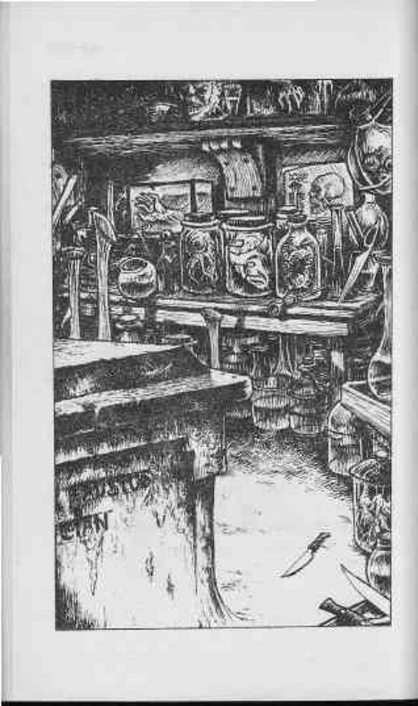
You enter a mausoleum containing a sarcophagus and some wall-shelves and tables, covered with a bizarre array of items. You notice surgical equip- ment, blades, bottled specimens and freaks of na- ture, jars of fluids, and a number of severed limbs and heads which appear to be in a perfectly pre- served condition. This is rather disturbing, so will you Search this chamber? Turn to 313 Leave and open the east door? Turn to 371 Leave and open the south door? Turn to 8
Along the eastern passageway there is a door to the north, and the passageway turns south just beyond it; there is another door facing you at the junction of the east and south corridors. Will you Open the north door? Turn to 305 Open the door facing you? Turn to 354 Follow the corridor round to the south? Turn to 166 i OO
You take the steps down until you come to a door which bears no plaque or sign, although you can see that there are some scratch marks on the door, as if something has been removed or some creature has been trying to get in or perhaps has just defaced the door. Will you Open this door? Turn to 338 Retrace your steps and head east? Turn to 108 ! Retrace your steps and go south? Turn to 161
You see that there is a plaque on the door, with the inscription 'Doktor Karl Adenauer'. You knock politely, and a wavering but sharp voice answers 'Come!' You step in, and see a grey-haired, middle- aged man in robes sitting at a desk covered with papers neatly stacked up in piles. The room is chock full of books and papers, and the man peers at you over a crystal ball mounted on a dragon's foot which stands on his desk. 'Doktor Adenauer, young man,' he says, rather needlessly. 'Sage in the employ of Count Reiner Heydrich; wretched man, never gives me enough money for my research. These impor- tant books cost a fortune!" and he indicates a wall full of bookcases with a sweep of his hand. He looks grumpy, but he isn't hostile. At least, he doesn't seem to be! Will you Attack him? Turn to 242 Talk to him? Turn to 75 Leave and return to the corridor? Turn to 181
'You lack the means to destroy my undead brother,' says Siegfried, a cold edge of reproach in his voice 'You have failed here. Flee for your life!' You need 'ho second invitation; Siegfried knows better than anyone what your chances of success are But when you reach the steps at the top of the Crypt there is a smiling figure waiting, a creature whom you cannot destroy, and your quest ends here as he flies at you to feed his insatiable appetite for blood!
You strike out at the wolf, but your weapon does not harm it! In return, it bites you; lose 2 STAMINA points. This is no ordinary wolf -- your trusty sword cannot harm it, so you run as fast as you can out through the doorand towards the river. Turn to 309
No object you have is of any use in this situation; the organ drones dismally on and you lose 2 STAMINA points from rat-bites before you make a dash for the north door. Turn to 335.
You prise the lid off the sarcophagus. Inside is an ordinary skeleton, but there is also an ornate brass bottle, and the seal round its stopper looks intact You can inspect the contents of this bottle by open- ing it (if you do this, turn to 306). If you wish to leave, you can enter the Chancellor's tomb opposite if you haven't already done so (turn to 359) or head east down the corridor, towards the T-junction turn to 230
The evil magic-wielder smiles as she draws a razor- sharp dagger, its blue crystalline blade set into a silver handle. She is very nimble and swift and dodges your blows; she will not be easy to over- come BAOBHAN SITH SKILL 9 STAMINA 9 If you win, you can search the place; turn to 324 Se
Roll one die and add 4. If the result is less than or equal to your FAITH, turn to 343. If the result is greater than your FAITH, turn to 381
You must fight the two Zombies one at a time; fight the first Zombie and then, if you are still alive, the second one. SKILL STAMINA First ZOMBIE 6 5 Second ZOMBIE 7 7 If you win, you move up on the staircase: turn to 311.
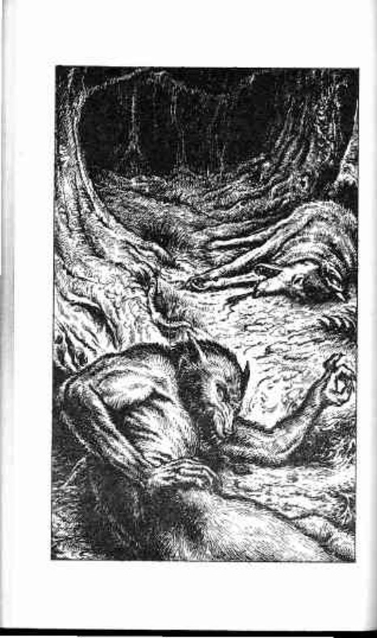
You feel a strange venom from the bite of the larger wolf affecting you. With horror you look down at the furry body and see that it is changing, in death, into a half-human shape! This was no wolf, this was a Werewolf, and you have been bitten by it! Record Lycanthropy in the Afflictions box on your Adventure Sheet. You don't know exactly how long it will take for this to start affecting you seriously, but you had better make haste on your quest and seek help or a remedy! Turn to 314.
You open the door and peer into a large, dark room; you take a torch from the corridor to light a lamp in here and then look around. On a block of black marble, draped with black and crimson silk sheets, is a darkwood coffin. Your heart beats rapidly as you advance upon it, but the menace is not within it - it is around you! Thickening and swirling in the air is a rosy, smoky mist, which advances upon you with semi-solid tentacles, trying to strangle you! You cannot see to escape, so you must fight this weird entity. Do you have a Magic Sword? If you do, turn to 42. If you don't, turn to 245.
The Count''s first bite was a glancing one which left a superficial flesh-wound, but this time his sharp fangs penetrate deeply. The pain seems to sear right through you down to your spine, and you scream out as you crumple to the floor. Wrapping his cloak about him, the Count settles to feed. You were so very close to success, but your quest has failed!
! Looking at the sleeping girl, will you try Waking her up? Turn to 301 Searching the room? Turn to 368 Leaving here and returning to the north door in the entrance hail? Turn to 101
You find nothing else of note, so you leave. Now you can try the east door down the corridor (turn to 227) or the south door at the end of the same corridor (turn to 319).
You unlock the Count's safe. Inside you find a pile of credit notes, all bearing Reiner Heydrich's signature; but these have no value to you, worse luck! Rummaging around among the papers, you lay your hands on a large black iron key - the key to the crypt where the evil vampire dwells! Add the Crypt Key to your Possessions. Now roll one die and add 3 to the number rolled. If the result is less than or equal to your FAITH, turn to 98. If the result is greater than your FAITH, turn to 46.
The fiend lunges at your throat and you hurl your- self sideways away from it; but the carriage door bursts open and you are flung out. Lose 2 STAMINA points caused by the bruising fall as you roll over and over, the laughter of the ghostly figure in the ' distance ringing in your ears. Now you must Test - your Luck. If you are Lucky, turn to 24. If you are Unlucky, turn to 370
JANDOR'S BOLT is a powerful spell which creates a glowing bolt of white energy that will deliver 6 points of damage to the STAMINA of any one undead creature. You can use it at any time during combat. Return to 102.
The Count has tried to cast his vampiric charm upon you, but he has failed to control your mind and now you can fight freely! Will you Run at him and strike with your sword? Turn to 26 Throw Holy Water at him, if you have any? Turn to 216 Cast a spell, if you can? Turn to 158 Get an item out of your backpack? Turn to 17
The Zombies set off towards you, armed with knives and cleavers! But they are slow-moving and you will probably be able to get away if you want to Will you try to avoid them by retreating and slam- ming the door (turn to 347) or will you stand in the doorway and fight (turn to 81)?
Katarina smiles beautifully at you and her feline eyes glitter. You realize that she is trying to control you, as she did before; since she has succeeded once, it will be harder for you to resist her this time! Roll one die and add 6 to the number rolled. If the total is less than or equal to your FAITH, turn to 343. If the total is greater than your FAITH, turn to 381.
Clambering along the treacherous trail, you turn your ankle over on a protruding gnarled tree-root; deduct 1 STAMINA point. You get to the hilltop without further mishap, so turn to 362.
Unerringly, the Jelly strikes at your vulnerable neck reopening the wound, and blood begins to drip from it. You must lose 1 point of sramrina through bleeding every Attack Round until this combat is finished! Turn to 239
As you cross the room, one of the carved stone rats comes to life and nips your heel! Lose 1 STAMINA point; as you turn to strike, it is gone! You cross the room and open the door; turn to 341.
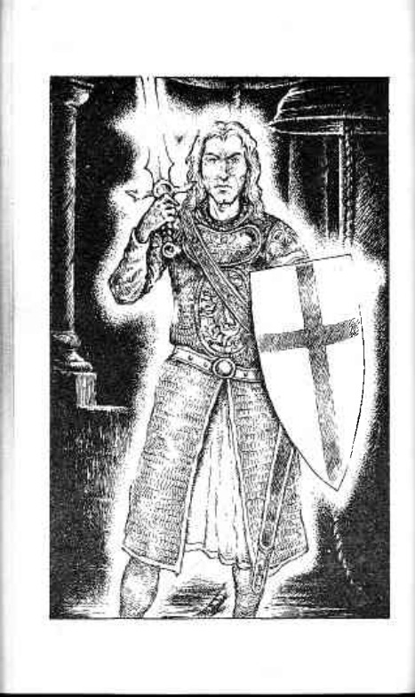
The clapper strikes the silver bell soundlessly and a sudden shock runs through your body. You feel light-headed and half swooning; a majestic figure stands radiant in the air before you. Clad in shining chainmail, bearing a shield of the purest white with a great red cross and holding a magnificent long- sword stands the shade of Siegfried Heydrich, for- mer Count of the Castle in happier times. He stands just under seven feet tall, and his flowing blond locks frame his noble, smooth-complexioned and flawless face The apparition speaks. 'Cleanse this place of shame and horror, brave warrior. My brother slew me by treachery, and I call on you to restore our good name and free the people from Reiner's thrall. In this place he has hidden my armoutr, my shield, and my great sword, Nightstar. I know not where they are; but Ido know that a lesser magical blade, that of my faithful vassal Mikhail, is hidden below this tower; it is to be found in a secret chamber below a hidden trapdoor at the base, Go now, my friend and destroy the dread evil of this Castle!' Then the ghost is gone. Turn to 337 ! -
Katarina looks at you aghast. 'She is mine! I need her blood and that of the other girls to stay young!' For a split second, you almost see through the illusion of her youth and gaze upon her true fea- tures, wizened and corruptly aged; then she is attacking you! You must fight, so turn to 71
The kitchen contains some good food -- bread, bis- cuits, cheese, sweet dried fruits and so on. You can gather plentiful supplies here (add 6 to your Provi- sions). Now, are you searching for herbs for an Alchemist? If you are, turn to the paragraph with the same number as the jar he asked you to bring him. If not, you leave here and return to the main corridor. Now will you Open the north door? Turn to 332 Open the west door? Turn to 221 Follow the eastern side-passage? Turn to 353 1 On O
You slam and lock the door as the armour-guard rains blows down on it with its mailed gauntlets Now you can try the door on the east side of the balcony nearest you (turn to 302) or the one at the extreme southern end of the balcony (turn to 244 ---- ee . .0
Without a magical weapon you cannot hope to defeat the Count; other things like spells and Holy Water may cause some damage, but they cannot overcome him. The Count wears you down with his blows until finally he sinks his fangs into your hot pulsing throat, ripping through skin and muscle and sending blood spurting into the air. Your quest has failed
i Roll two dice and add 2 to the total. If the result is less than or equal to your SKILL, you can get away turn to 383. If the total is higher than your SKILL you will have to fight after all, so turn to 236
You strike one final blow at your enemy, but she has disappeared! Before your eyes she vanishes, leaving only the ghost of a laugh behind. Obviously she has achieved some magical escape You make only the briefest of searches here, aware that she could return as surprisingly as she left. You take gold ornaments and jewellery worth 7 Gold Pieces (add this to your Treasure) and you aiso find ina desk a magical potion of healing which you take add this to your Possessions). This potion can be drunk at any time, except during combats, and will restore 4 lost STAMINA points. Now you leave and return to the corridor, following it south; turn to 31
As you open the crystal lid of the coffin, a tingling electric shock passes through your arm and knocks you down; lose 3 STAMINA points. Turn to 229
Roll one die. If the number rolled is 1, turn to 151. If the number rolled is 6, turn to 322. If you roll any other number, turn to 202
After a while, the rats retreat to their lair- wherever that may be. You re-emerge on to the balcony and head for the door at the south end of it. Turn to 244
Roll one die. [f you roll 1-4, the Wraith's blows have drained 1 SKILL point from you; only if you roll 5 or 6 have you been lucky enough to avoid this. What's more, your intuition tells you that there are prob- ably worse undead creatures you haven't met yet! Turn to 316
You tell Lothar about Katarina and her evil nature and he seems totally unsurprised. Looking very serious, he says he will tell you of the Heydrichs and how you may be able to overcome them; turn to 196
Do you have a Magic Sword? If you do, turn to 388 If you don't, turn to 340
-L Katarina's brilliant, dazzling green eyes gaze into yours; she is trying the same trick that Reiner used! Turn to 264
Opening the west door, you see a corridor stretch- ing out towards the west before you. It is well lit and a thick-piled crimson carpet runs along the centre of the tiled floor. There is a door close by you on the north wall, and another a little further along you can also see that there is a door facing you at the end of the corridor, and that the corridor also turns south at that point. Will you Close this door and open the south one on the landing, if you haven't done so before? Turn to 131 Open the north door closest to you? Turn to 182 Open the second north door? Turn to 267 Open the west door facing you? Turn to 34 Follow the corridor round to the south? Turn to 37 i ari : at = -- -- a -
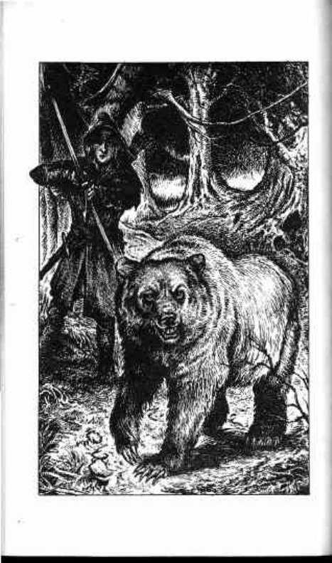
You now find yourself fighting a large and aggres- sive brown bear. You have one Attack Round of fighting this animal before its owner, a young woman busily drawing her longsword, joins in the fray. You will then have to fight them together. For each Attack Round, roll two dice for all three of you the combatant with the highest Attack Strength will be the one who lands the effective, damaging blow The bear protects his mistress, and you must kill the animal before you can do any damage to her SKILL STAMINA BROWN BEAR 7 8 FOREST RANGER 10 9 If you win, turn to 393
Just before you get to the landing, you reach a closed door on the north side of the passage. From behind it you hear a brief noise, some kind of crunching sound. Will you open the door here and investigate turn to 241 if you do) or ignore it and make straight for the landing (turn to 191)?
Hair sprouts on your face, hands and body, and you feel canine teeth growing in your jawbone, causing you great pain. Lose 3 STAMINA points. Now you have the Major Lycanthropy Affliction; you need help fast! Turn to 154 -_-_-_--.... a
The ancient undead creature has an elemental malice and brooding hatred of living creatures which will not be affected by your FAITH, and it will fight to the last! SPECTRE SKILL 10 STAMINA 14 If you win, you will leave and make for the Crypt but first you must roll one die. If you roll a 6, turn to 389. If you roll any other number, turn to 354
What will you use? If you have one of them, will you try garlic (turn to 349) or the Count's amulet (turn to 398) to keep the wolves away; or will you try throw- ing food to them (turn to 39)?
You find nothing of note, so you return to the corridor. You can either open the door at the east end of it (turn to 351) or follow it round to the south turn to 166
You try saying something, even shaking the girl I but she does not awaken. You could try the time- 1 honoured method of kissing her to make her wake up (turn to 327), ignore her and get on with search- ing the room (turn to 368), or leave the whole area return to the entrance hall, and open the north I door there (turn to 101
You find the lock; the key slides smoothly in and the door opens readily. The room beyond is well lit there are carpets on the floor, pew-like benches and on the eastern side opposite you, a great pipe- organ, its sides obscured by heavy purple and black wall-hangings. A set of massive silvered candle- sticks - dozens of them - stands to one side of the organ. You can also see a door in the north wall of this music-room; as you enter to investigate this, a dismal droning arises from the organ, although it has no player! As you wonder what is happening, a scurrying and scratching noise begins, and you see that the balcony outside is swarming with black rats, vile things with fierce, sharp, yellow teeth which are said to carry the plague - and they're heading towards you! Will you Close this door and stay inside the organ room? Turn to 391 Run for the north door in this room? Turn to 335 Try to silence the organ somehow? =' Turn to 37 Leave this room and make arun for the door at the south end of the balcony? Turn to 171
The Sage looks very serious and says that you don't want to go down there. The Count keeps prisoners in the Crypt, and it is protected by traps and by a particularly horrible enchanted monster made out of bones. 'Anyway it's locked, and the Count has the key in his rooms; the lock is magical, and only that key will get you in. It's a great iron key, I've seen the Count carrying it - but, as I say, you really don't want to go down there. Oh no!' Return to 75.
Do you also have a Crucifix or the Shield of Faith? If you have at least one of these items, turn to 104. If you have neither item, turn to 74.
You walk through into a lounge, with rich imported carpets of intricate design, sumptuously comfort- able armchafus, and tables bearing silverware and lace. Therc are three gilt-flamed paintings on the east wall, arrd you decide to go over and look at them. One shows a tall, handsome man with black hair tapering to a peak over his forehead and deep gleen eyes; the plaque below leads, 'Count Reiner Heydrich'. The Eecond shows a strikingly attractive young woman with flowing curly black hair and the same striking green eyes; she is wearing a black flowing dress and jewellery. emerald The plaque below this picture reads, 'Katarina Heydrich'. The third painting has no plaque and has been defaced, although you call see that it once showed an excep- tionally tall, smooth-faced blond rnan. Do you have a Magic Sword? If you do, turn to 355. If you don't, turn to 49.
Inside the bottle is a well-aged brandy which has magnificent restorative powers. When it is drunk, 4 points of lost STAMINA can be regained. You may drink it now or keep it for later (if you keep it, add it to your Possessions; you can drink it at any time except during combat). Boris may have been a drunkard, but he knew a good pick-me-up when he found one, and you should be happy to drink to his memory! Now you may open the Chancellor's tomb if you haven't done so already (turn to 359) or head for the T-junction along the corridor (turn to 230 !
You open the door and enter a shrine of some kind; the room is unlit, and you need a light-source to see by. There are white and yellow cloths on tables, wall-hangings decorating the room, small stools and a writing-table. There is also a book lying on a chair which attracts your attention, so you pick it up. It is a history of the lives of some famous holy men and healers, and it has a signature on the flyleaf, that of Gunthar Heydrich. You can take this book with you if you wish (if you do, add the Book of Healers to your Possessions). There is a spy-hole on the east wall, and you stand on a stool to look through it. Beyond, you can see a bare chamber with a pair of Zombies standing motionless on guard, holding fearsome halberds. Behind them is a half-open door leading into a bare chamber with stone steps going up. There doesn't seem to be any way of getting into the Zombie Chamber from here, so you leave and head for the door at the end of the eastern side-passage outside; turn to 258.
As the Jelly hits you, a blob of the viscous mess splashes on to your body. As the slime drips over you, your body begins to change shape and sprout fine black fur. Your armour and backpack fall away as your arms turn into leathery wings. Squeaking you fly to the door and await the arrival of your new master! >
Roll one die, then add 1 to the number rolled. This is the number of times the wolf bites you before you manage to force the door open and make it as far as the water's edge, and you lose 2 STAMINA points for each bite. If these bites reduce your STAMINA to zero or lower, you are dead and your adventure is over If you are still alive, you run into the river in panic The wolf stops by the water's edge, howling in frustration; as you look back, the wolf turns first into a cloud of yellow-tinged gas and then into a giant bat; then it flies away towards Castle Heydrich! There is no sign of the Gnome. Now you can get in the boat and cross the river (turn to 138) or continue wading across the river (turn to 187 0 ------------------ SS -----
The Spectre rains blows upon your back which wound and slow you; you fall to the unyielding stone floor under the weight of the blows, and the undead monster drains the last of your life-force away. Your quest ends here
The stairs end at a landing, where you come to a door of black wood embellished with runes inlaid in silver. As you try to open it, the handle turns into a claw and grasps your wrist. 'Leave this place,' the door intones sonorously, 'you're not allowed in here.' The claw releases your hand. A talking door! You can try to get past it (turn to 342) or give up and go back to the courtyard (turn to 389
Something nags at your mind about the size of the room you are in. You guess that it is next to Gunthar's, and you know where Lothar's rooms are, and there is a missing room in the area, if your hunch is right. Checking the west wall very carefully, you find your hunch is right; there is a secret door here. You open it, and use your lantern to peer into the darkened room beyond. This bare room contains only a pinewood coffin. You walk in and tip it over, breaking the wood with the hilt of your sword and scattering the black earth within it over the floor. Record in the Notes box of your Adventure Sheet that you have destroyed one of Reiner Heydrich's coffins, and gain 1 FAITH point! Turn to 289.
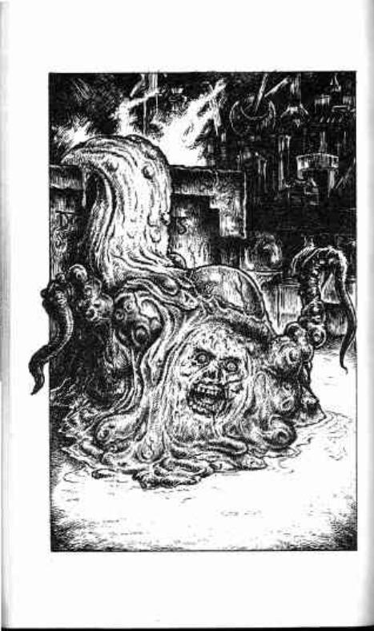
You look around for anything that may be of value but as you search the shelves you hear a strange bubbling, gulping sound behind you. Spinning around, you see a disgusting, greenish yellow seething monstrosity, slithering from the sarcopha- gus and blocking your way to the door. Most hor- rible of all, in the depths of the foul, slimy mess you can see what could just be the remains of a human face! It slides along the floor towards you, stretching out with limb-like pseudopods to reach you. You must fight this horror! NECROTIC JELLY SKILL 7 STAMINA 9 If the Necrotic Jelly wounds you, turn at once to 367 If you overcome the horror, turn to 184
Before moving on, you notice that the larger wolf hasa glint of gold round its neck: a golden chain and a small pendant. The latter has a design etched on it it looks like the one you remember seeing briefly on the coach. It must be the Heydrich coat of arms, or something similar. You may take the Count's Amulet with you if you wish {if you do, add this to your Treasure); it is valuable, and is worth 3 Gold Pieces. You continue your journey to the Castle without further incident, so turn to 362
As you unlock the door, a small, sharp blade whips out from the doorframe and narrowly misses in- flicting a very unpleasant wound on your hand Gain 1 LUCK point for this good fortune. You push the door open; turn to 382
You ascend the narrow, steeply sloping wooden stairs until you come to a landing before a wooden door which is barred and decorated with warding glyphs of amber and silver. Something is scratching on the other side of the door. There is a distinctly unpleasant charnel smell here. You can summon your courage and open the door (turn to 390) or retreat downstairs, go back and open the north door in the entrance hall (turn to 101
If you have the Book of Healers, you decide to show this to Gunthar. If you have an Affliction, Gunthar will help you with this m return for getting the book back, so turn to 375. If you don't have an Affliction Gunthar will still reward you for the return of this book, so turn to 235. If you don't have this book, but you have the Book of Swords, turn to the paragraph with the same number as the magical page in that book ™™-:-
The Alchemist says he will prepare a potion for you which will be of help, but he wants 8 Gold Pieces for the cost of the ingredients (coins, or other Treasure worth 8 Gold Pieces). If you have 8 Gold Pieces (or their equivalent) and agree to pay, turn to 79. If you don't have 8 Gold Pieces, but you do have some Treasure and want the potion, turn to 36. If you have no Treasure, or you are unwilling to pay, you leave through the west door; turn to 373.
The large door here is locked. Do you have the Castellan's Keys? If you do, turn to 87. If you don't, you can't open the door, so you give up and try the east door nearby; turn to 227.
Back in the corridor, will you: Open the north door along the corridor? Turn to 267 Open the west door along the corridor? Turn to 34 Follow the corridor round to the south? Turn to 31
The spectral creature lunges at you, but his hands stop short of your neck and he hisses in frustration Your FAITH has protected you from his attack! He wraps his cape about him and simply vanishes! Increase your FAITH by 1 point You continue your journey safely until the coach stops at the foot of a hilland you descend; the coach races off into the heavy mists and is soon out of sight. Turn to 362
The young man grabs a scimitar from the wall and fights; he is a better swordsman than you had expected! a WILHELM HEYDRICH sxkILL8 STAMINA 7 If you win, did you choose to attack Wilhelm? If you did, turn to 379. If he attacked you first, turn to 21
LUCKSPELL will restore 3 Jost Luck points whenever you cast it, which you can do at any time except during a combat. Return to 102
If you have the Lycanthropy Affliction, turn to 7. If you have the Major Lycanthropy Affliction, turn to 386. If you have neither, turn to 51
As you stride across the room, one of the stone bats flutters from the wall and gashes your face. Lose 2STAMINA points. You try to hit back, but the mag- ical creature has disappeared! You get to the door and open it; turn to 341
You put your shoulder to the heavy wooden gates and they open with a creak which sets your nerves on edge. You walk through a small entrance area into a large courtyard. Facing you, you observe great brass decorated doors across the courtyard and past the entrance to what looks like a family Crypt. There are also two doors to the west of you and a door just round the corner which opens into a southern part of the main building. Will you Head for the brass doors to the north? Turn to 2 Open the door in the south? Turn to 18 Open the upper west door? Turn to 377 Open the lower west door? Turn to 54 Head for the Crypt? Turn to 90
Roll one die and add 5. If the result is less than or equal to your FAITH, turn to 62. If the result is greater than your FAITH, turn to 16
Trembling, you open a vein and allow blood to run into the chalice. As the scarlet liquid drips into the bowl, red runes glow before your eyes and seem to dance round its rim You snap into alertness as a cold hand touches your shoulder. 'You nearly fainted,' Siegfried says, "but the magic is woven. Behold!' He points to a match- less longsword, glowing with bluish white light lying on the table before you. Although you lost STAMINA when you gave your blood, on picking up Nightstar energy pours into you and you recover not only this lost STAMINA buta further4 STAMINA points as well! Nightstar is a magical sword of considerable power. When using it, you may add 1 point to your SKILL when fighting any creature however, when fighting a Vampire you may add 2 to your SKILL. These KILL bonuses do allow you to exceed your Initial SKILL and can even raise your total SKILL above 12, if your Initial skILL was high enough for this to be the case with the bonus. You may also gain 1 FAITH point and 2 LucxK points for finding this excellent prize. Turn to 82
Katarina's feline eyes spark with annoyance. 'You puny little wretch,' she flares, 'I took you for a warrior!' You can either attack her (turn to 71) or change your tune and agree that you would like to kill her brother after all (turn to 399).
Drifting into the chamber from a grille set into the floor is a smoky, apparitional figure radiating a hideous, chilly malice - a Wraith! Roll one die and add 3. If the result is less than or equal to your FAITH, turn to 44. If the result is greater than your FAITH, turn to 124.
Katarina's eyes bore into your soul and her gaze renders you helpless, unable to act. 'You are impetuous, but you are no bad fighter and I have a use for you,' she whispers softly. You are charmed, powerless to resist her suggestions. 'There is a man here I want slain. He was once my servant, but now I distrust him, and it will be amusing for me to have you do this work for me.' She smiles at you, and you feel that you would do anything she asked of you. 'Leave here, go south, and open the second door to the east. Kill the man there.' You leave as commanded and open the door she has specified; turn to 227.
This door has a small silvered lock. Do you have a Silver Key? If you have, tum to the paragraph whose number is the same as the number on the key. If you haven't, you can't open this door. You can either go back and open the west door in the corridor, if you haven' talready done so (turn to 221 or go down the eastern side-passage (turn to 353
At the end of the eastern corridor, just before you get to the landing, is the room where you fought the monster; peering in, you see a chest. It is heavily locked, and with the Castellan's Keys you can un- lock it. But the wretched lid still won't open! Puz- zled, you look at it more closely, and you notice a smail silvered plaque with what could be an obscure code of some kind etched on it. Turn to 123
The snake ts now coiled round your legs. You must suffer 1 point of automatic damage every Attack Round, irrespective of who has the higher Attack Strength (deduct 1 point from your STAMINA each Attack Round until this combat ends). You must also suffer the extra penalty of having 2 SKILL points deducted, due to this constriction, until you kill the River Snake. Return to 236 to finish the battle Dee
Roll one die; if you roll 1-2, you are bitten once; 3-4 and you are wounded twice; 5-6 means you sustain three rat-bites. For each bite, you must deduct 1 STAMINA point before you get to the north door and slam it shut behind you to keep the rats out, if you are still alive! Turn to 361
This desk drawer is locked, although you will prob- ably be able to find a key among the Castellan's Keys which will open it. However, as you tug on the drawer handle you hear a slight crunching sound as if there might be some kind of trap on the drawer Will you Use a key to unlock this drawer? Turn to 219 Open the first drawer, if you haven't already done so? Turn to 392 Open the coffer? Turn to 271 ea ee
You make your way down the stairs with renewed vigour and FAITH; gain 1 FAITH point and 1 LUCK point. At the base of the bell tower you find the concealed trapdoor and retrieve the sword Siegfried described. Add the Magic Sword to your Posses- sions. This Magic Sword is not a powerful one. It does not add anything to your SKILL when you use it. However, creatures are lurking about which can be hurt only by magical weapons, so the sword is very valuable! Also, when you tell it to do so, it will shine brightly in the dark, so you will not need to use your lantern again. Now you return to the court- yard, so turn to 380
Bs ye, 2 338 You open the door into a chamber that is lit by a pearly globe of magical light, shining softly over a quartz-crystal coffin which stands on a magnificent- ly decorated catafalque. Inside the coffin you see a man. Of extraordinary height, almost seven feet tall, and with flowing blond hair, he is smooth of face, fine of feature, and thickly muscled; the body must surely be embalmed. On the catafalque is a ee SS -t-teSC™S 'i small ornamental shield with lettering which reads simply, 'Siegfried Heydrich' Although you can see no belongings of the blond giant inside his tomb, there might well be some- thing concealed within it. Will you Try to open the coffin? Turn to 384 Wait a while to see if anything happens? Turn to 229 Leave and take the steps backup? Turn to 224
You drive home what you know is a killing blow With an inhuman shriek the Count's body crumples and is slowly transformed into a cloud of gas. Check the Notes box on your Adventure Sheet, Have you destroyed at least two of Reiner Heydrich's coffins? If you have, turn to 19. If you have destroyed only one, or none at all, turn to 357
You can't fight the Shadow without a magical weapon. You run for the brass doors to the north; the Shadow strikes you once in the back (lose 2 STAMINA points), but it doesn't follow. Turn to 2.
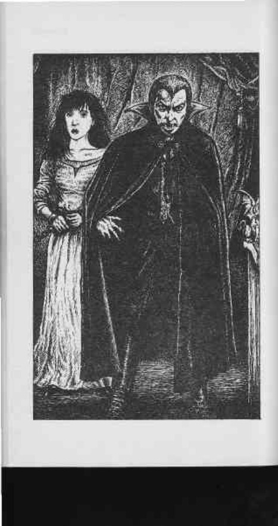
You step into a palatial chamber, lit by glowing and silver wall-hangings obscure the walls, and you can see no other exits. The room ts magnificently furnished with teak and walnut, and silverware and marble gleam in the soft light. Some twenty feet away is a raised baicony at the top of marbled stairs with gilded banisters, and there stands a dark- haired man with blazing eyes, wrapped ina cloak of the deepest biack and crimson. The Count! Behind him you can see a chained girl, her long auburn tresses tumbling over her bare shoulders, strug- gling without hope to free herself. Her lovely fair face turns to you and she cries out for help. But your eyes are fixed on the terrible, dark, charismatic Count; his green eyes are afire as he gazes at you and parts his lips in anticipation. Roll one die and add 6 to the number rolled. If the total is less than or equal to your FAITH, turn to 274, If the total is greater than your FAITH, turn to 167 athe yen
You hammer on the door with the hilt of your sword, to avoid damaging its blade. The door retali- ates by jabbing you firmly in the midriff with the metal doorknob! Eventually you break the door down, but you have to take some damage in the process. Roll one die; the number rolled is the number of STAMINA points you lose before you manage to smash the door down. Beyond, the stairs continue upwards and you see the dim outline of a bell tower. You can also heara high-pitched squeak- ing and fluttering. You can either press on upwards turn to 33) or go back down to the courtyard (turn to 380
You resist the hateful woman's attempt to control you and strike out with your sword, inflicting 2 points of damage on her STAMINA. Turn to 106 to continue the combat
You cry out that you mean them no harm, but the woman has already loosed off an arrow which strikes you; lose 2 STAMINA points. Lowering her bow, she gestures to the bear, which growls but doesn't attack you. She walks over, apologizing and explains that she is a Forest Ranger whose job it is to protect the woods - and she did not expect anyone going about alone at night to be up to any good! She binds the flesh wound the arrow made Valderesse the Ranger is a friendly and helpful person; you tell her of your quest to rescue Nastas- sia from the clutches of Count Heydrich. At this she looks very serious. 'The Count is a very evil man Fierce wolves and flocks of bats infest the land around his castle, and the local folk say he steals away young women to be his slaves - or worse, But it wasn't always like that. His brother, Siegfried who was Count before him - now he was a decent and good man- but she breaks off at the sound of a peal of thunder as heavy rain begins to splatter down through the bare tree branches overhead 'Come on, let's get you to the ferry!' You set off with her towards the river, and on the way she gives you some food to help you on your journey; add 2 meals to your Provisions. Turn to 13
As you sit down to talk with Lothar, stabbing pains rack your body and you are convulsed in breath- taking spasms of agony. Lose 4 STAMINA points Lothar snatches a flask from his desk and manages to pour some golden liquid down your throat. Gasp- ing and spluttering, you slowly recover your senses. 'You agreed to help her, didn't you?' Lothar says unhappily as you sit with your head between your knees. You look up, shame-faced, nodding agreement. 'Well, you may not have meant to go along with it, butif you give your word freely to that witch, you cannot break it without suffering the consequences.' He is obviously wondering how much he can trust you. You plead that you are here to do away with evil, and he seems to take you at your word; turn to 196
You advance upon the Count, hoping for a power- ful initial sword-thrust, at the same time casting the spell as you strike. However, you will do the extra damage only if you have the higher Attack Strength and land a blow in this Attack Round. Turn to 26
Roll two dice and add the scores. If the total is less than or equal to your SKILL, turn to 396. If the total is greater than your SKILL, turn to 190
You search the Zombies, but they have nothing of value. You pass through the half-open door in the east wall and enter another bare chamber. Here there is a flight of stone steps leading up, and the walls are lit with torches in sconces. You climb the steps, and when you get to the top you are standing under a shaft of moonlight from a tiny circular window high on the north wall. If you have the Lycanthropy Affliction, turn to 297. If you have the Major Lycanthropy Affliction, turn to 204. If you have neither, turn to 154.
Garlic won't keep wolves at bay! You get bitten for your pains while waving the stuff at them;.deduct 2 points from your STAMINA. Now you have to fight so turn to 103
You whisper Siegfried's name and the chest springs open. Inside is a suit of magnificent, gleaming silvered chainmail! Eagerly, you strip off your own leather armour and don this superior protection; its seeming weightlessness tells you it is magical! Gain 1 FAITH point and 1 LUCK point for this excellent find. The chainmail increases your SKILL by 1 point, but only during combats. It can increase your SKILL above its Initial level - and if your current LUCK was 12, your SKILL is now a full 13 with this superb magical armour! Delighted with your prize, you set off for the Crypt. Turn to 191.
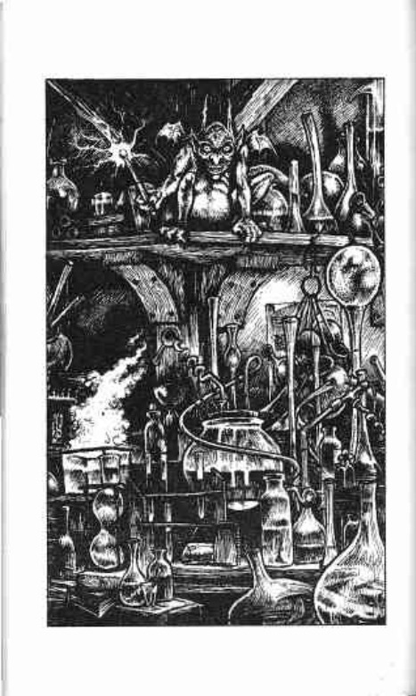
Opening the door, you hear sizzling and spitting noises. Peering carefully round the half-open door you see an extraordinary assembly of vessels, jars containers and instruments of brass, iron and glass standing on tables and shelves. Oil burners keep vessels of cloudy bubbling liquids on the boil, and there is a strange, metallic, acid smell. Watching you closely is a small, green, winged humanoid creature sitting on a shelf on the wall; it is playing with a small bronze wand which sparkles and crack- les. You could try attacking it- whatever it is (turn to 366) - or try talking to it (turn to 9
Gradually normal vision returns to you and, from the light of the torches in the corridor, you can see into the gloom. The Thassaloss was clearly guarding an oaken chest which stands on top of a pinewood table in this otherwise bare chamber. Unfortunate- ly, the chest is securely locked and bound, and you cannot openit. You feel frustrated and cheated, and make a note to come back here if you find any keys which might fit the chest! Turn to 320
i 353 After progressing some ten feet, you come level with a door on the north side of the passage, and then the dimly lit, tiled corridor continues to a door at the end. Will you open the north door (turn to 307) or the door further along (turn to 258)?
The undead malice of the Spectre has drained away much of your life energy; deduct 1 point from your SKILL. Now turn to 389
You recognize the defaced portrait as that of Sieg- fried Heydrich, and you storm out of the room in anger at this desecration. You can open the door at the junction of the east and south corridors (turn to 351) or follow the corridor south (turn to 166
As you cross the room, one of the stone wolf-heads snarls at you and seems about to rear from the wall to strike at you, but you evade the magical guardian and get to the opposite door safely. Turn to 341 pee ae ete a b ch irre Pally a ste" phy
The gas-cloud moves with inhuman speed up the Stairs and out of the Crypt; it has gone out of your sight very quickly, even though you run as fast as you can in pursuit. The Count has fled to re-form his body by resting in a secret coffin you haven't dis- covered, and you won't be able to find him now. If you haven't done so already, you now unchain the sobbing Nastassia and, wrapping some warm clothing round her, you take her to the Castle gate and then on the long walk back to Leverhelven. You have rescued the girl, and the local people are grateful. But the Count still conducts his reign of terror, and yours is a hollow victory
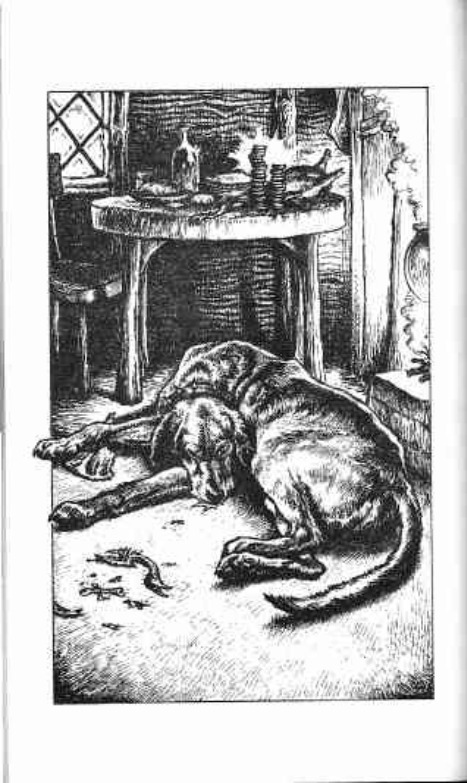
You enter the hut and search around. In the Gnome's bedroom you find a portrait of a dark and cadaverous, but undoubtedly handsome man, his black hair brushed back from a widow's peak over his forehead and piercing emerald-green eyes which almost seem to look at you. He has a mocking smile on his face, and on his crimson-lined black cloak is a coat of arms which is the same as the one you noticed on the Count's coach. Below it is a brass plaque which has etched on it, in crude lettering 'Master'. It was wise to do away with that evil little Gnome! Passing by the kitchen, you see the glint of gold on the table and a generous supply of food you might need on your adventure. There is also a very large dog snoozing before a wood stove, Will you Attack the dog? Turn to 40 Try to sneak quietly past the dog? Turn to 89 Leave and wade across the river? Turn to 187 Leave and get into the boat? Turn to 138
You open the door, to gaze on a horrid scene: the stone sarcophagus in this bare room has been smashed open, and a half-rotting green thing which may once have been human is crouched close by the door, gnawing on a bone. Immediately it leaps snarling, to attack you. An overwhelming stench of rotting flesh nauseates and weakens you. Will you fight this creature (turn to 122) or try to get out and shut the door, locking the thing inside (turn to 88)?
The Raven is a dangerous and wily enemy. He always strikes at your face and you shriek with agony as he pecks out an eye! You lose 2 points from your SKILL; record the Curse of the Raven in the Afflictions box on your Adventure Sheet. Unless you can get this Affliction cured, you will not be able to restore these lost SKILL points! Staggering out clutching at your bleeding face, you head for the door at the end of the south passage. Turn to 252
You stand in a workroom of some kind. There are unfamiliar tools on tables and work-benches, prisms and lenses mounted in iron rings, and small caskets made of sandalwood and other exotic and aromatic woods. Searching around, you deduce this may have been a jeweller's workroom; certainly you find a tiny silver-and-amethyst pin worth 2 Gold Pieces (add this to your Treasure) and some bars of silver which, alas, are too heavy to carry. The rats are still scurrying around outside, so you have time to make a really thorough search. You are in luck! In a secret drawer in a desk you find a magical Ring of Regeneration (add this to your Possessions) which you can slip on your finger. The ring surges with power whenever you land the killing blow in a battle, and you may regain 2 STAMINA points. However, this ring does not work during a combat, only at the end of one which you have just won! Have you met Gunthar Heydrich? If you have not, turn to 289. If you have, roll two dice and add 2 to the total. If the result is less than or equal to your SKILL, turn to 312. If the result is greater than your SKILL, turn to 289.
You walk along as far as the base of a narrow trail which leads up a steep incline, and suddenly you walk out of the fog into a completely clear area. Starkly illuminated by the three-quarter moon stands the brooding Castle Heydrich! You can walk up and enter the half-open front gates (turn to 326) or walk round the outside to see what you can make of the place (turn to 50).
You sit down warily beside Katarina. She offers you some fine wine, and notes your hesitation; laughing, she drinks some herself to show that it is not poisoned. Nevertheless, you are careful to sip only a little of it. Then she asks you a rather startling question: 'Are you here to kill Reiner?' What will you say to her? Will you: Agree that you are here to kill Reiner Heydrich, her brother? Turn to 399 Deny that you intend to kill the Count? Turn to 329 Say you are here to rescue Nastassia, the village girl? Turn to 281
be ae 364 You look into a very snug room that is evidently used by diners who have had too much to eat and drink. Among the armchairs, footstools and cushions you spy two objects of note. First, thereisa decanter of what smells like brandy. Although there are only two large measures left in the decanter each one will restore 4 lost STAMINA points. You can drink one or both now, or save the brandy for later. (If you do this, add it to your Possessions subtracting a measure when you consume one. If you keep the brandy, you can drink it at any time except during a combat.) There is also a small drape across one corner of the room, and when you draw this back you find a smail silver mirror on a table. If you wish to take this, add the Silver Mirror to your Possessions You leave and go back to the corridor. From the east door opposite, you hear aloud slamming sound and a shout. Perhaps something has been discovered, or someone has been alerted! You must now decide either to open the northern door (turn to 332) or to head down the eastern side-passage (turn to 353 "i
The monster strikes you as many times as the num- ber you rolled on the die, and for each hit you lose 2 STAMINA points. If you survive this onslaught, you run out to the balcony with the Crypt Key and back to the northern part of the Castle. Fortunately, the Spectre won't enter this well-lit area to the north - but less fortunately, even though you're still alive you have lost 1 point from your $kILL through the life-draining power of the undead horror. You run down the corridor towards the landing; turn to 389
The little winged creature strikes at you with its miniature magical wand. Whenever it hits you, it causes 3 points of damage, rather than the usual 2! HOMUNCULUS SKILL 8 STAMINA 5 If you win, turn to 57.
If you have the Curse of the Bat, turn to 308. If you don't have that Affliction, but you have the Curse of the Healer, turn to 278. If you have neither, turn to 239
You start to look around for secret alcoves, trap- doors and the like - and you turn your back on the girl. She rises from her resting place and you are about to get a very nasty surprise. Turn to 62 Ge ic
Lothar the Castellan looks up in horror as you advance to fight him. He grabs his broadsword and will give his best! LOTHAR SKILL 9 STAMINA 10 If you win, turn to 234.
You roll over the edge of a precipice, and your body is smashed to pieces on the rocks in the chasm below. You have failed most miserably in your quest!
You open the great black door to the east and step into a dank corridor in which there is an almost palpable sense of evil. Your light-source shows gleams reflecting ahead, and you see the yellowed bones of the guardian which is moving swiftly towards you. The huge, four-armed skeletal crea- ture - a Major Thassaloss - carries a massive black scythe; great, green, glowing eye-sockets glower above the mindlessly grinning, slack jawbone of the skull. You may either fight the thing (turn to 22) or if you can, cast a spell at it (turn to 93
You can strike the Vampire with your magical weapon and wound him. He uses no weapon but deploys his inhuman strength to smash and bludgeon you with his powerful fists, and claw at your face and arms. With a SKILL higher than the limitations of a mere mortal, Count Reiner Heydrich is a very powerful enemy indeed! COUNT REINER HEYDRICH SKILL 13 STAMINA 21 If the Count's STAMINA is reduced to 4 points or below in this fight, turn at once to 28. Keep a record of not only the Count's current STAMINA score, but his SKILL score too, since you may come across him again later!
F. Die: re Me . i 373 Back in the corridor, you can open a door on the west side, opposite the Alchemist's room, if you haven't done so before (turn to 240) or go to the far southern end of the passage and open the door there (turn to 252
Siegfried seems displeased, and he telis you that you must obiain the sword. If you agree, turn to 328 but you must ignore any references to your STAMINA, FAITH or LUCK made in that paragraph If you still refuse, turn to 259 Et Sd ee fae zz
You give the Book of Healers to Gunthar, who is delighted to have it back. Reiner stole it some months ago, and Gunthar has not been able to find it without the Count's spies - his rats and bats - following him. 'This will help me in my work,' says the grateful man, 'and I will help you even if Katar- ina does try to punish me for it!' He casts a healing spell, and this will cure any one Affliction you have if you have more than one Affliction you may choose which one this spell cures; erase this Afflic- tion from the Afflictions box on your Adventure Sheet). Now, you can either leave and open the west door on the landing (turn to 294) or you can show Gunthar any other book you have found in the Castle by turning to the paragraph with the same number as the magical page in that book -_--S------ SS OS -S=--__==____=_=_=_=_=__=___. CU
Katarina looks at the book you are carrying. 'Perhaps I can help after all,' she says as she takes it from you and opens it. She gives a sharp intake of breath when she reaches the magical page. 'This is Siegfried's sword, you know,' she whispers. 'Reiner imprisoned it here. He is very afraid of it, for it is one of the very few things that can actually kill him. I could release it and give it to you, but you must do me a favour in return.' You nod your head; at least you can hear her out. 'The Castellan, Lothar, is plotting against me. I want you to kill him for me. Then I will dispel the magic guarding it and give you the sword.' Will you agree to go and kill Lothar for her (turn to 298) or will you refuse to do this (turn to 248)?
You open the doors into a stabling room. It looks bare, but there is an odd smell in here - that of wolves - and you can hear growling through the thin wall to the south, so you decide not to go in that direction! Now will you Enter and search this room carefully? Turn to 5 Head for the Crypt? Turn to 90 Head for the brass, northern doors in the courtyard? Turn to 2 Open the southern door in the courtyard? Turn to 18
You enter a library lit by a golden globe of soft magica] light, hanging in the air. There are hun- dreds of books on the bookshelves, but one particu- lar shelf is full of works concerned with the history of Mortvania and the Heydtich family, and you look quickly through some of them. You read of the time when Siegfried was Count and the land flourished until Siegfried disappeared mysteriously and Rein- er became Count. Since that time, misery and fear have been the people's lot. It seems that many Heydrichs have been cruel and despotic tyrants; of Reiner's great-great-grandfather Eckhart you read a small text which states that 'the folke saye he is Vampyre'. On the frontispiece is written in elegant sloping writing, 'and now I have attained that blessed state'. Since Reiner Heydrich's signature is on the flyleaf, you know what this means! Just as you feel that you have spent too much time here, you come across a small, untitled book with many illustrations of weapons. One page, page 188 has a slight magical glow which draws you toit. This leaf of the book is a beautiful illuminated etching ofa sword, covered in runes and held to the sky by a powerful, muscular bronzed arm. You take this book; add the Book of Swords to your Possessions and make a note of the number of the magical page Now you leave, and you search in the eastern side-passage for the stairs which will lead you to the floor above. Turn to 47
Poor Wilhelm was a feckless idiot who wished you no harm. For such a cruel and evil act, lose 2 points from your FAITH and 2 points from your LUCK, Turn to 21
Back in the main courtyard, you can investigate the Crypt, if you haven't already done so (turn to 90) or head for the main north doors (turn to 2)
Katarina's sweet smile utterly captivates you. 'You have done splendidly,' she purrs. 'Now I am the Countess here.' You will be her willing servant always - or at least until a luckier or more valiant warrior kills you, freeing you from your bondage!
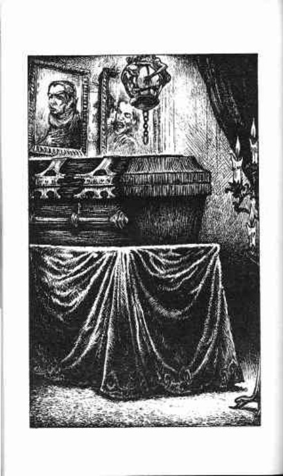
You enter the Count's bedroom, a nightmare of garish horror. A large mahogany coffin with silver hinges and handles stands in the centre on a high wooden table, surrounded by black and crimson coverings. On the walls, tapestries and paintings show the Count's ancestors, all with the black hair and widow's peak which betrays their vampiric nature. Some are shown gloatingly draining their victims of blood, and one even stands next to a Fire Demon! They seem to glower with menace at you as you look in. Walking round the room, you also find a locked safe underneath a second table, and a writing-desk with two drawers and a pile of neatly stacked vellum and quills on top. Fearfully, you move to the coffin, and throw it over. The wood splinters, the top falls off, and rich black earth cascades over the floor. You smash the coffin lid with the hilt of your sword. Record in the Notes box on your Adventure Sheet that you have destroyed one of Reiner Heydrich's coffins, and gain 1 FAITH point! Now, will you Open the safe? Turn to 271 Open the first desk drawer? Turn to 392 Open the second desk drawer? Turn to 336 tO yn
You set off along the trail on the far bank of the river and walk on through the slight mist. There is no birdsong and little sign of life; this silence is almost unnerving. After some hours you come upon a small stone cottage nestling in a clearing; a thin stream of blue woodsmoke drifts lazily upwards from the chimney. Looking cautiously through the half-open door, you see a man inside, sitting dozing before a stove. He is dressed in brown and grey jeathers, and there is a long curved knife in his hands. You see little else from where you are although you can smell something good cooking in there! If you did not sleep at the Gnome's hut, you are getting very tired now, and you must sleep here You could attack the man, hoping to achieve sur- prise (turn to 27), or go in and talk with him (turn to 126). If you did sleep at the Gnome's hut, you have the extra option of ignoring the man and just con- tinuing on your way (turn to 228
Roll one die and add 5 to the number rolled. If the total is less than or equal to your FAITH, turn to 229 If it is greater than your FAITH, turn to 287
You make a lucky find: a tiny silver elven amulet on a chain of prayer-beads. Gain 1 LUCK point for finding this lucky charm. Now you leave, and you can try the east door along the corvidor to the south turn to 227) or the south door at the end of the same corridor (turn to 319
You look around, and suddenly a shaft of moonlight falls through a window in the tower and strikes you You change shape, swiftly but painfully, and howl at the moon through your muzzle! Now you are a werewolf servant of the Count, and your adventure ends here!
A cloud of billowing poisonous green vapours floats up from a small crushed vial inside the drawer. You jerk your head back quickly, but you still inhale some of it, and soon you are convulsing uncontrol- lably. Just as you see the Count walk into his bed- room, smiling evilly at you, you pass out. Your quest ends here!
The Shadow is not easy to hit, but with your Magic Sword you can at least damage it. SHADOW SKILL 8 STAMINA 6 If you win, you can either investigate the door to the south, if you haven't done so before (turn to 18) or check the brass doors to the north (turn to 2).
You follow the corridor north and then east, towards the stairs leading down. Have you fought a Minor Thassaloss in the Castle? If you have, turn to 333. If you haven't, turn to 296.
You open the door and gaze into a low-ceilinged room with some narrow stone steps visible on the other side. Bones and horrifying, bloodied jumps of flesh and gristle lie around the room, and the occu- pant-a huge Ghoul-- intends that you should be his next feast! Roll one die and add 4. If the total is lower than or equal to your FAITH, turn to 30. If the total is greater than your FAITH, turn to 70
Unfortunately, rats are beginning to swarm in through holes behind one of the wall-hangings and they attack you. Lose 1 STAMINA point from a nip from a particularly vicious specimen. You have to make a run for the north door here, so turn to 335 aa --
The first desk drawer is unlocked and you find a small leather bag with 4 Gold Pieces in it (add these to your Treasure). Now you can either try opening the second drawer (turn to 336) or opening the safe turn to 271
You have just killed a guardian of the forest who was justifiably suspicious of travellers by night - lose 1 FAITH point and 1 LUCK point! Searching the body, you find sufficient food for 4 meals (add 4 to your Provisions) and 3 Gold Pieces (add these to your Treasure As you continue your journey, rain begins to fall and you become damp and cold; lose 2 STAMINA points. But you finally reach the river, and soon you find the hut of the ferryman, with a small boat moored beside it. Turn to 13
'I can't do anything about them,' the Sage sighs 'but you could try Gunthar. He claims to be a healer so he might be able to help. Up the stairs and through the door with the silver handle.' Return to 75 i =
The spell is useless against Katarina. She can charm people, but she doesn't actually drink blood: she isn't a Vampire! Katarina strikes out at you as you finish spellcasting; lose 2 STAMINA points. Return to 106 to finish the combat; if you are using the magical sword Nightstar, you can claim a bonus of only 1 to your SKILL for using it
You slam the door and decide to get away quickly You could open the door opposite you in the west wall (turn to 221), go to the north door at the end of the passage (turn to 332) or go down the eastern side-passage (turn to 353
Have you met Katarina Heydrich yet? If you have and you agreed to kill Lothar for her, turn to 345. If you have, and you refused to do this (or attacked her), turn to 291, If you haven't met her, turn to 247
At the sight of the amulet, the wolves cower back and keep away from you, whimpering. You can see there is nothing of interest in their pen, and you guess that this also applies to whatever is behind the other western doors off the courtyard. So will you Open the brass northerly doors? Turn to 2 Approach the Crypt? Turn to 90 Open the south door? Turn to 18
'Excellent,' purrs the saturnine lady. 'When he is dead, I shall rule here as Countess!' Do you have the Book of Swords? If you do, and you wish to show this to Katarina, turn to the paragraph which is twice the number of the magic page in that book (so, if the magical page is page 70, turn to paragraph 140). If you don't have this book or if you have it and you don't want to let her know about it, turn to 119.
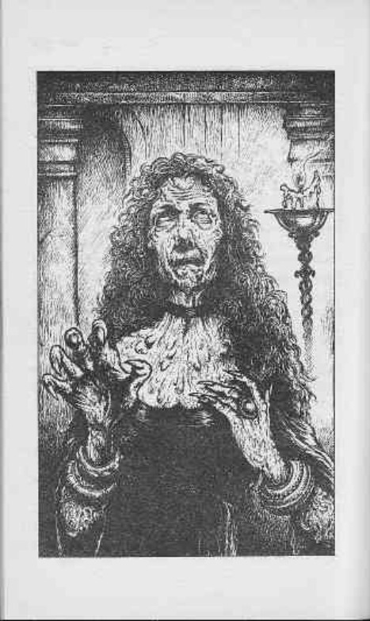
The lifeless body of the would-be ruler of Castle Heydrich falls to the floor. There is no hideous shriek, like the soul-rending cry of the Count dis- patched to hell, but simply the choking sigh of an evil woman meeting her just end. As she falls, her appearance changes. The illusion of her youth dis- appears, and a wizened old crone lies at your feet Nastassia gasps in horror and looks away, burying her face in your chest. You put an arm round her and lead her slowly up the stairs, away from this evil place. Turning as you leave the Crypt, you see the shade of Siegfried standing behind you, waving a last farewell. At lasi I can rest in peace, you sense him feeling, and you wave back as he makes a last gesture of blessing upon a warrior as brave as, but more successful than, he was. Castle Heydrich has been cleansed of its timeless, elemental evil by your hand. You sheathe your sword and lead the girl back home, to the hero's welcome that rightly awaits your return.